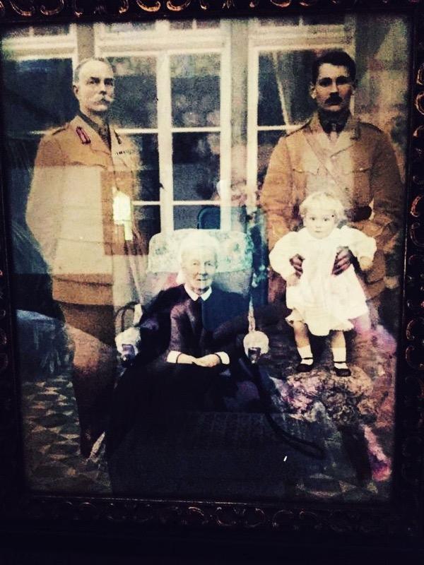

A memoir by Gerald Innes Churchill (1913–1993). Transcribed from the original typescript by his grandson.

At 9 o’clock on the morning of 9th September, Colonel de Burgh addressed all officers and other ranks in the camp. There was a likelihood, he said, that the Germans would come to occupy the camp: Italian cyclist patrols had been sent out by the Italian commandant to give warning of their approach, and English and Italian officers had already gone out to reconnoitre an area in the neighbourhood where it would be possible for the camp to hide. On the alarm being sounded by the English trumpeter, all ranks would form up by companies in the exercise field, prepared to march out. In the meantime, the wire fence was being cut, and haversack rations would be drawn immediately: all ranks would change into battledress and wear boots. The parade was then dismissed.
During the next few hours the camp was occupied in preparing for a possible exit. Haversacks were packed, rations drawn, and maps prepared. Speculation was intense, though at least half the officers of the camp thought that evacuation would not be necessary, and very few imagined that they would have to hide from the Germans for more than a few days. This optimism was largely accounted for by the announcement on the official notice board of British landings at numerous northern Italian ports, as well as at Bari, Naples and Taranto. It seemed, in fact, merely a question as to whether the Germans would be able to get north of the River Po before they were cut off by Allied troops.
By 11:30 my own preparations were complete and I started a game of chess with Ian Shaw. After an hour’s play I was on the point of victory, having got 2 castles on his back line and having captured his queen. This was highly satisfactory,as before I had always suffered defeat at Shaw’s hands. At this moment, however, the trumpet sounded and the game had to be abandoned. As we were in the middle of forming up in the field, a medium bomber with Italian markings flew slowly at about 800 feet directly over the camp. This caused the Italian sentries to desert their posts and to leap hurriedly into the ditch encircling the camp. As they had been in the habit of using this ditch as a latrine, many of them leapt equally hurriedly out again. Others, carrying suitcases and without arms, were seen taking refuge in the nearby cemetery.
Within five minutes of the trumpet sounding, we were marching out by companies through the gap in the wire fence. We marched across country for about an hour in a north-westerly direction. During the march an aeroplane of the same type as the first one flew about 500 feet over our company; it could not have failed to observe us in detail, but took no offensive action. At the end of an hour we reached a watercourse, the sides of which were thickly wooded, and contained by a double earthen bank; there was very little water coming down at present, but from the high water mark it was clear that the banks were at times necessary to prevent flooding of the extremely flat countryside.
Company areas were allotted on either side of the stream, Camp HQ being in a thicket on the edge of the earth bank.
Our company dispersed in its area, which consisted of a few acres off a corn stubble (undersown with a good clover mixture), interspersed with lines of vines on wires, supported by ash and mulberry trees. In the shade of these trees we lay down, and started on the grapes, which were rather sour. Contact was soon made with the neighbouring farm, from which water was obtained; also eggs, read, fruit and wine by those who had the discretion to go into the house by the back door.
During the afternoon, Peter (Lt. Com. E.O. Burne, XII R.L.) and I went to Camp HQ several times (it was about 10 minutes walk). At about 3:30 Capt. Camino (Italian 2nd in command) arrived to ask whether we intended returning to camp that night, and, if not, whether we required blankets or rations. Col. de Burgh replied that we would stay where we were for the night and required nothing, the weather being warm and fine. Within half an hour of this, a message was received from the Camp to say that shortly after our departure, Germans had arrived, the party consisting of one tank and a lorry-load of infantry. They were confronted by the Italian Commandant, the doctor and one other Italian officer. It seemed that the rest of the garrison had deserted, probably as soon as it learnt of the Commandant’s intention to defend the camp against the Germans. The Germans took the Commandant prisoner, and looted the camp, particular attention being paid to the Red Cross parcel store. They then apparently motored around the neighbourhood, enquiring for us, but got no information.
This news came as a shock to many. It was clear that a return to the camp was out of the question, and also that our present situation was more precarious than had at first been realised.
As a result of discussions at Col. de Burgh’s HQ, it was decided further to disperse companies and at the same time to withdraw still more from the nearest road. These moves were to take place after nightfall.
Accordingly at 9 p.m. our Company moved about a mile further on along the stream, and settled down between its flanking undergrowth and the dyke, which was here about 7 feet high. The Company as a whole composed itself to sleep, watch being kept by HQ personnel. No incidents of local significance occurred during the night: heavy traffic was heard on the Via Aemilia (about 3m. to the South), and occasional explosions and small arms fire came from the same direction. This was subsequently said to have been caused by an Italian attack on some ammunition trucks standing in a siding on the Fidenza-Salsa Maggiore line.
By morning there was a thick local mist and some drizzle. Peter and I visited Col. de Burgh’s HQ several times during the day, the point at issue being that Peter wished to disperse the Company and allow individuals to go their own ways. This permission was eventually given, two other companies by that time having come to our opinion. The position was, therefore, that Camp HQ Coy. and one Coy. were staying in situ, and the other three companies were due to break away and split up into small parties after dark. During the afternoon orders were given for the Company’s move: the Company was to move as a body across the Via Aemilia and across the railway which ran closely parallel to it: then everyone would be at liberty to go his own way: parties of not less than three and not more than seven were recommended. The route to be taken by the Company in its approach to the Via Aemilia had to take a westerly bias towards Fidenza to allow room for the movement of the Company on our left. Our right flank was open. Fidenza was reported to be occupied by Germans.
From midday onwards we received visits from many Italians—most of them bringing gifts of some kind or another. Inhabitants of Fontanellato brought Red Cross Parcels salvaged from what the Germans had left. Civilian clothes were brought, but largely rejected, as many were still unconvinced that it would be necessary to use disguise, and in any case uncertain of the German reaction to escaping POWs recaptured out of uniform. Information was brought and lavishly distributed: there had been a battle for Parma railway station, 20 Italian officers defending it had been captured and shot: British and American troops appeared to have landed at most ports between Fiume and Genoa, but reports of their progress were lacking. Further details of the German decent on Fontanellato were given.
As the afternoon wore on, we sat in our arbours, eating food from Red Cross Parcels and Italian bread; occasionally drinking vino which our visitors brought, and all the time trying to compete with the flow of Italian, French and broken American-English. We wished that our salon was not quite so large: it seemed that the whole countryside must know of our whereabouts, and among so many children, young girls and old men might not the Germans find at least one or two who would give us away.
We waited for 8 p.m., the time of our departure, with mounting impatience. At about 5 p.m. this impatience was increased to acute agoraphobia by an Italian report, largely confirmed by officers of another Company, that a German truck had halted on a road about 2m. away and that two of its crew had come to within a mile of our position and had asked a farmer if anything had been seen of escaping English POWs. Our Company lookouts were resited to deal with this threat, and the rest of us watched the sun, which appeared to be unduly high in the sky for the time of day. Peter, Van and I had by now arranged to travel together when the time came to split up, and we had accordingly rationalised our supply of money—about 400 lira—and of food—in the main bread, biscuits, and tinned meat roll. We had as well two elementary hand-drawn small scale local maps.
By 8 p.m. the sun had set, but it was far from dark. None the less, the Company set off in a westerly direction across country, marching in close order: all present were in battledress. After a mile or so, we turned south, skirting a hamlet, the inhabitants of which viewed us with some surprise. It was perhaps more our formation than our presence which caused them to wonder.
We aimed to cross the Via Aemilia to the east of Fidenza and we set our course with this object, steering by the stars (and a very bright moon, almost full) and a prismatic compass, the property of Major Knott, a platoon commander. We crossed one or two minor roads with great circumspection, and were pinned to the ground on one occasion for nearly half an hour by a noisy party in a farm which we had to skirt. We thought there might be German troops billeted there, though in fact, we learnt later, this would have been entirely contrary to usual practice in this area.
By midnight we reached the railway, having twice had our route confirmed by Italians. We crossed the railway without mishap, but with considerable noise: the signal wires by the side of the line were twanging madly for many minutes, but a nearby signal box paid no attention. Lights along the line changed from green to red, but we hoped that this was nothing to do with us.
Immediately on crossing, we split up into our travelling parties and we ourselves were not to meet again on this trip more than two members of the Company.
The Via Aemilia lay a couple of fields further on, and was quite without traffic. Peter, Van (Lieut. Van Burton, XII RL) and I climbed an awkward wire fence on its south side, and set off across the fields on a course Southeast by South.
We walked in the bright moonlight across the fields, ducking under the wires in the rows of vines. All the dogs in the countryside were barking: from each farmhouse came a continuous yapping. We kept moving at a good speed, wanting to put as much distance as we could between us and the Via Aemilia. We went through a small village, as quietly as we could, and saw no one. We had been told that Germans were encamped in this area, but beyond that, we had no idea what to expect. At about two in the morning we struck a hard road again and followed it. We passed a farm and at a small wood just beyond it we decided we could go no further. We lay down in the wood, and slept by turns till dawn. As soon as it was fully light, we cautiously emerged from our wood and found that our situation was by no means as secluded as we had hoped. The countryside was closely cultivated and was well stocked with buildings and farm roads: the road we had left the night before was a motor road, and ran within a hundred yards of us. Almost at once we met, and could not have avoided, a milkman on his rounds: he seemed friendly but we could not understand him. We went on to a nearby small farm house, leaving our haversacks in the wood. Here we were given black sugared coffee, and also 3 eggs, for which we offered money. In spite of her husband’s protest, the woman took our lira. We started back to the wood, but were soon accosted by a voluble man, who jabbered at us over a hedge: it all had something to do with the farm by the wood, but we could not make out what. When we got back, we found our haversacks gone: it occurred to us that this had been the burden of this voluble man’s song, and so it turned out. Small boys from the farm had observed our departure and had swooped on our haversacks like hawks. With some difficulty we retrieved our belongings.
As the price of their redemption, we had to submit to a continual stream of visitors: we drank their vino and ate their bread, and tried not to listen to their talk. Our interest was fixed however, when a woman said that two Germans in civilian clothes had just passed along the road, asking for news of British prisoners: they had called at the farm behind our wood— about 150 yards away–but had now gone. It appeared also that there was a considerable detachment of Germans stationed at Noceto, about 2 kms. away. We therefore insisted on reducing our number of visitors–their chatter we felt could be heard half a mile away—and regularized there comings and goings, at the same time dispersing a considerable group of sightseers, who were hanging about in the lane.
During the day Van paid a visit to a French speaking Italian lady, living in a house about a mile away: she had housed three English the night before, but they had now gone on. From her Van got the latest BBC news, from which we began to get a somewhat more realistic view of the military situation.
Soon after sunset we continued our journey in a southerly direction, our objective being Pellegrino. We started off along a pleasant green lane through fields: by the time it was dark we were again on a motor road, and continued on it for 5 or 6 miles. We passed through one hamlet, in which, we were told, other English prisoners were at that moment sleeping. We left Salsa Maggine on our right, where were reported to be many Germans.
The country was rapidly becoming more hilly, and in the bright moonlight we could see ahead of us country more mountainous still. We turned off the motor road eventually and went along a farm track: at the farm which it led to we stopped for a while, and were given vino by the proprietress, who had been a governess in England. We were shown small scale atlases which did not help us at all, and as no further hospitality was forthcoming, we took our leave. The farm bailiff walked with us for a mile to show the way. We went on uphill for another half hour and then stopped. We moved off the road a few yards and settled down to sleep in the shelter of some scrubby oak and thorn trees. The hillside was rather steep and this caused Peter some discomfort, as he showed a tendency to roll down the hill, whenever he got to sleep. Next morning, a Sunday, we arose at an early hour and ate our breakfast—hard boiled egg and bread. We then looked about for a suitable place to spend the day, and finally settled on a grassy hollow under a big rock, shaded by oak trees and overlooking the lane: there was a farm half a mile further on.
During the morning we slept by turns and visited the farm, where we washed and shaved, and got bread and cheese. After mid-day we had visitors, but neither so numerous nor so intolerably loquacious as on previous occasions. I contrived to sleep through a large part of their visit. Later on I conversed with a boy from the farm and learnt the names of several trees: it seemed that the local oak tree was a distinct variety from the normal sort of oak tree or ‘quercus’. I also cut hazel walking sticks for myself and Peter.
Again at sunset we started out: this time up a steep hill. We were somewhat vague as to our exact position, but intended to continue south and to avoid Pellegrino, where Germans and Fascist Carabinieri were said to be. We had been given the name of a friendly priest, whose church we were now looking for. The country was by now almost mountainous, and the soil poor and stony. After a couple of hours we found the priest: unfortunately for us his house was already full of English: one of whom turned out to be Gazeley, with a badly blistered heel. The priest told us of a reliable and friendly Italian, towards whom we now went, on a south-easterly course. We went by rough lanes for the most part, and, in the main, down hill. It became clear after an hour or two that the priest’s directions and our route were no longer the same, so we pulled into the nearest farm and asked for shelter. We were directed to the house of an “American” named Augusto, who received us, almost literally, with open arms. We were given good white wine—very different stuff from the ordinary rough red vino—and food: in time we were allowed to go to sleep in good straw in a barn, which we found to be a great luxury, and as a result, we all slept like logs.
In the morning we were given a good breakfast of coffee, eggs and bread, followed up with more white wine. Augusto accompanied us for a mile and parted from us with every appearance of sorrow. Many years in the States had left him with a violent dislike of Fascism.
We walked on slowly up a steep hill in hot sun: we were still uncertain of the advisability of walking by day, and after discussion, decided to spend the day in a wood. Augusto had given us food and wine, which, together with the heat, materially assisted our decision. We found a wood on the top of a hill within a couple of miles, and there we stayed till shortly before sunset. Our position overlooked from the North a deep valley running East and West: we could see a motor road and a wide shallow river close together, both coming from the town of Varsi, which lay a dozen miles to the West. We planned to go West round Varsi and then to continue our southerly course. At this time our general plan was merely to get as far away as we could from centres of population, roads and railways: we still imagined that after a few weeks the Germans would be forced to evacuate all Italy south of the Po.
Accordingly that evening we continued our westward march along a mule track which ran along the high ground parallel to the road and river line. We soon passed a farmer, who warmly invited us to come in for the night: we hardly thought we could stop so soon, but none the less we rested for a while: we were given eggs and bread, and when we said we had been advised (by Augusto) to go to a farm called Gravegutte, the man offered to guide us there.
We therefore started on again with our guide and in about 2 hours reached Gravegutte, on the south bank of the river and about 1/2 a mile north of the motor road. We had passed a mill on the route with circumspection, as the miller was a Fascist. Gravegutte received us politely but not enthusiastically, and showed us a place in his barn where we could sleep: the bedding was maize straw, which we found much inferior to wheat straw. Next morning we received a good breakfast and were given cheese for our journey. We recrossed the river—in full view of the carabinieri barracks just East of Varsi and regained the shelter of the hill and its abundant cover.
We continued our westward march, after a short rest, along the mule tracks: there were many blackberries, which we ate. Before long we came to a small village, where, after a suspicious greeting, we were taken into a house in which 3 other officers from Fontanellato were lurking. They had already changed into civilian clothes, and looked rather like musical comedy vagabonds. It seemed that the Italians, on seeing our battledress, had told them the Germans were coming, and they had been whisked off into hiding, until our identity had been disclosed. We were given eggs and bacon (fried) by their hosts, and altogether made a heavy meal. We got under way again after an hour or so, but made slow progress: the sun was considerably hotter, and we still found room for blackberries. While we were wandering along we were overtaken by a priest—a youngish man, very well shod and moving fast. He spoke a little French, which sufficed to invite us to his house for a meal. This we reached in rather more than an hour, including a halt for wine with one of his parishioners and were introduced to his mother and 3 younger sisters. His church and house was pleasantly sited halfway up the hillside, well away from other houses, and overlooking the Varsi-Bardi motor road. We were by now well beyond Varsi, and could see to the West of us from time to time the black mass of rock, on which was Bardi castle and part of the town. He was a priest of advanced outlook, for he had a bath, which he showed us with pride: there was however no water laid on, owing to the war, he said. We fed off cold ham, lettuce and wine: and again ate a tremendous meal. We studied atlases and a good large-scale local map: we planned provisionally to cross the Taro (moving East) at Borgo Val del Taro, and the priest gave us an itinerary with likely halts on the way. One of these was the priest at San Mariano, and he pointed out the way we should start out: across the road and river, south-east up a long rise to a high col, and then south to San Mariano. We left the priest and his family about 3 o’clock, and lay ourselves down in an oak grove, about a mile away and further down the hill. We dozed till about half an hour before sunset, and then got ready for a further march. I persuaded Peter to throw away his hat, which he did with evident regret. We moved down hill to a small hamlet just above the road, in which we found a Cockney speaking English woman, with her Italian husband and children. She gave us a glass of wine, and found a guide to show us across the road. This we successfully accomplished, in spite of the conspiratorial attitudes struck by our minute and extremely talkative guide, and made our way across the wide and completely exposed river bed. Before we regained the farther fields, we were accosted by an ill-natured and dull witted man, who showed great curiosity, and would, we felt, have done us harm if he had known how. Half a mile further on, having thrown off the boor, we met 2 Italian soldiers, in ‘borgese’, having recently crossed the Taro on their homeward flight: they reported Germans on the roads and railways, and on bridges, but not specifically guarding the line of the river. As darkness fell, we stumbled along a stony lane, and through a close-built dirty village: its name, we found out later, was Tosca. Just beyond the village we refused an invitation to sleep and eat: we regretted that later, as we became very weary, and had to content ourselves with a draughty stable and insufficient bedding. We were however given a very fair breakfast the next morning, and were set on our way by a guide.
Within an hour we reached the col overlooking the Taro valley (at a distance of 6 or 7 miles) and a cultivated plateau on which were the villages of San Martino and San Mariano: the latter lay close under the high hills and to the South of us, well away from the main road and railway in the valley. We reached San Mariano by midday, having followed a pleasant route along a mule track which ran right at the foot of the mountains and well above the plateau. We gazed curiously at the high land to the East of the valley and wondered whether we should in fact shortly be walking across it. As we were looking into the sun, we could see little detail, but only the mass of lines of formidable looking hills. We could not see down into the Taro valley, but could easily pick out its course from the deep rift it made in the tumbled landscape.
The priest at San Mariano was delighted to see us: he greeted us— somewhat prematurely—as liberators and allies, and very soon we were sitting down before bowls of coffee and milk. His mother washed our socks, and darned them, though this work was not to stand the test of time—in fact mine were in holes again within 24 hours. Shortly we were taken down to the house of 3 ladies with a wireless. Van was put ‘on the set’ and after much labour he extracted a rather garbled version of the news from the foreign service of the BBC. We were in the meantime given lunch by the ladies, and spent a civilised interlude: their garden was full of flowers, and conversation did not seem unduly impeded by our lack of a common language. While we were having lunch a party of a dozen O.R.s from Fontanellato turned up, led by the bull-terrier like sailor whose boxing mannerisms had fascinated me so much in the camp. He appeared to have his party under control, and being Italian speaking and in plain clothes was able to reconnoitre his route with some measure of safety. He went on his way after we had exchanged information, and we continued with our lunch. Towards the middle of the afternoon, refusing pressing invitations to stay longer from the priest, his mother and his brother, we started off again. We planned to move nearer to the valley and reconnoitre a place to cross. We walked for three hours over wooded shoulders of the hills until we were not far above the village of Ostia, on the railway. We paused on the outskirts of a village further up the hill, and found that the party of O.R.s were before us and had taken up all available accommodation. We went on further down the hill along quite a reasonable road, passing many houses and numerous Italians. When we were near our objective—a church directly overlooking Ostia—we were stopped by a garrulous and extremely tall man—he must have been 6’6”. From the welter of his talk we gathered that the Germans had issued a manifesto offering substantial reward for English prisoners, and stating penalties for anyone found helping them; also that Germans were in Ostia and that they were in the habit of visiting a corn mill which we had just passed. We noticed further among the curious crowd watching us an Italian W.O. who retained his arms and uniform. This was unusual and might well have indicated pro-German sympathies. With only slight hesitation, therefore, we turned about and retraced our steps. As we went, a woman ran out of a house and gave us a loaf of bread hot from the oven. When we again came to where the O.Rs had been, we found them gone: they had heard the news of the German reward, it was said, and had taken to the hills. We went on another mile and sat ourselves down on an open bit of ground, well away from houses, but near a track.
As the darkness fell, we ate our bread and cheese and cooled off after our climb. Soon after it was quite dark a small dog began yapping at us: he was closely followed by an Italian who offered to take us to his house for the night. We were glad to go with him, and in due time we arrived at his one roomed shack. Here we drank quite good wine for an hour or so, in company with at least six other Italians, and then retired to bed in a barn full of good wheat straw, accompanied by the oldest and dirtiest of the Italians; he unfortunately fancied his English and showered on us much advice and exhortation. We left before dawn next day, and occupied ourselves pleasantly, once the sun was up, in washing ourselves and our clothes in a stream running through the woods. During the afternoon we moved about leisurely and begged some eggs at an isolated woodland farm. At dusk we returned to our previous night’s lodging, and were not received with much enthusiasm by the householder, though many of his friends and relations remained quite affable. We guessed that news of the German manifesto had spread this far, it only having been published on the day on which we heard of it. We offered to go, inconvenient though it would have been, but were in the end invited in without undue frostiness. Again we drank vino, but not so much, and again we slept in the barn with the old man, who was even more talkative, but much less intelligible.
Before dawn we left our barn, and going through part of the woods in which we had spent the previous day, we climbed up above the tree line onto grass downs. This took about two hours, and we were by then hot and very ready for our breakfast of bread, cheese and water. After a leisurely meal we strolled along a ridge, intending to view the country to the West, and to see in particular if we could pick out a village which the old chatterbox in the barn had advised us to go to. While on our way we came across a thug who said he had escaped from the Germans in Yugoslavia, and who also seemed in some fear of local ‘Fascists’. He appeared a criminal type and was most unprepossessing. As we were talking, he pointed to a determined-looking man of the gamekeeper type, who was approaching, muttering something about ‘Fascists’, and slunk off in a practised manner. We followed suit, less expertly, and the man passed. The thug had by now vanished, and we wandered rather aimlessly on. As we went along a path which wound down the hillside through thick bushes, we heard some rustling below us. We stopped and listened, but before we had time to move the man of the gamekeeper type was upon us. With him was an Italian officer, in uniform, armed and wearing his Fascist badges. We eyed each other suspiciously and all stood still. The officer informed us that he was escaping from the Germans, but in spite of this conciliatory statement, the atmosphere for some reason remained tense. The gamekeeper remained grim, dark and silent, while we disposed ourselves in a kind of ‘arrow-head’ formation, so that we could not all be attacked simultaneously. After a few moments we parted, they in the direction in which the thug had last been seen, and we in the opposite direction. We moved quickly for a mile or two, then turned sharply right handed down a scrubby slope and finally along a valley in the direction of San Mariano. While still out of sight of the church and village we stopped and took cover in some thick undergrowth by the side of a stream. Here we stayed till dusk, undisturbed except by a singing procession of children returning from the hills and bringing their cattle with them.
As night fell we descended again on the priest and were welcomed in, fed and bedded down. Next day we spent in the same thicket. We were soaked by a violent thunderstorm during the morning: in the afternoon Van, partially disguised as an Italian, went into the village to listen to the wireless. When he came back, he reported that the priest and his family were in a state of considerable flap, and seemed unlikely to harbour us for much longer, though we had been invited to spend the coming night at the parsonage. Accordingly, we decided that we must accelerate the making of the plan which we had been discussing for the last 36 hours. Peter, though formerly in favour of crossing the Taro and moving East, now advocated moving West, possibly to France or possibly to Alassio, where friends of his had a villa, which was still being looked after by their pro-English Italian agent. He argued that the Germans would be sure to hold the line of high hills running East and West just North of Firenze and would probably be at work there or already in position by the time we wanted to go through: that in the rear areas base installations of all kinds would make movement very difficult, and that in the areas he contemplated moving to there should be few Germans to worry us. He also suggested that crossing the Taro valley would be an unnecessary risk, when we might well be able to contact advancing British forces by remaining at large in the area between the Taro and the French frontier for a comparatively short space of time—an area which, he said, was without strategic significance and therefore a suitable one to hide in. I advocated crossing the Taro and moving East to wherever the British forces might be; I doubted that the Germans would yet be seriously fortifying the Firenze line, not expecting that they would be forced as far back as that for at least 3 months. I advised keeping north of the Chisa pass, which we knew to be occupied by Germans, and then passing North and East of Firenze before turning South. As neither of us would agree to the other’s plan, Van was called upon for a casting vote. He chose to go West.
That night also we spent in the Parsonage. We left next morning as dawn was breaking, dressed in a mixture of battledress and some civilian clothes which the priest had given us. We started off across the ground we had been moving about in for the last few days: we found after a couple of hours a small farmer who gave us milk, and an egg each to take with us. We were by now on the tops of the hills and found a conveniently westward running ridge which took us well on our way. We fell in with a muleteer who produced a friend to guide us, and next, after a rest in the sun for an hour, a woman who boiled our eggs for us. We had by now lost a lot of height, but were still on a narrow ridge running almost due West. A party of scared and loutish youths passed us—clearly deserters, who were not intending to obey the German orders to report for duty on the following day, which had been circularized in a recent manifesto. We had intended to go to a village called S. Martino, on the recommendation of our S. Mariano priest, but German billetees were reported there, offshoots of a Corps HQ at Borgo V. del Taro, and so we sheered off. We lunched late, about 3 p.m. in sight of Bedonia. As we were digesting our meal, 2 tough looking girls approached us–heavy walking shoes, rucksacks etc.—a cross between English hikers and Swiss Alpinists. We conversed for a while—they very friendly—until I said something about Germans in San Martino. They looked pleased and I thought perhaps they had misunderstood me, so I made it clear that I didn’t like Germans. Their faces changed immediately to horrified indignation: “Germans are all right by us”, they said, and flounced off in an easterly direction, moving fast. After a brief discussion, we moved West, equally fast, and continued for a couple of hours, until we reached the village of Siddolo. Here we saw on the church door the German manifesto, breathing forth threats against anyone harbouring English prisoners, carrying arms, or failing to report to the Germans when ordered. Not much comforted by this, we moved on to another smaller and more remote hamlet, arriving as darkness fell. Here we were given supper and a bed in a good straw loft.
The next morning we spent struggling across the slopes of an immense wooded mountain. We could not go South as that would have taken us into Bedonia, in which were Germans, or North, as the wooded range continued for many miles. By midday we were over the worst, and after our midday halt we moved down into a pleasant secluded valley. We looked for the village priest, but could not find him. We had noticed a man taking a keen interest in our approach, and he was now to be seen moving away at speed: he either thought we were Germans or that we were English. In neither case were his actions likely to benefit us, so we somewhat reluctantly addressed ourselves to yet another densely wooded ridge. As we reached the crest, we heard a church bell below us in the trees, and gladly made our way towards it. Within an hour we viewed the white church tower, and a village beyond. The valley and its stream led up directly into the mountains: there was no motor road for miles, only a narrow strip of cultivation along the stream, a few scattered hamlets, and mule tracks. The inhabitants were friendly, in fact already harbouring prisoners, two of whom we met, from PG 29. From these I had news of Wilfred Tatham, ‘somewhere in the woods’. After talking for some time, we went on, as night was falling, towards the white church—Cornolo its village was called. The rectory was a white square house, and might have been a small English country house of the late 18th century. Inside, however, the similarity ceased. The parson’s horse was stabled in what should have been the dining room, and, we found later, the characteristic stable odours penetrated to every corner of the house. We never found the Italians very good at ‘mucking out’, nor were there likely to be drains in a dining room. We dined upstairs with the priest in civilized comfort, and had wine above the average. Peter slept in a bed, Van and I in lucerne hay, which we found cold and prickly. Next morning we washed socks and sat about in the sun. After a midday meal with the priest, we climbed uncertainly out of the Cornolo valley, and continued west across a wide valley, passing through two rather inhospitable villages. At dusk we found a youth in a farmyard who led us willingly into his house. His parents had kept a restaurant near Paris, and entertained us now, as if we had been their best and oldest clients. We were made to dine apart, we were waited on by madame: monsieur Malaberti brought in the wine—of two varieties and both good. We had eggs and cheese, excellent minestrone and grapes. We slept in a straw loft and after an equally good breakfast, we set off again, reinforced by a motor touring map of Italy, the gift of Malaberti.
We climbed the shoulder of a mountain, at first in thick cloud, and made a somewhat devious path through woods on the far side. It began to rain about 11 and by midday it was raining really hard, with almost continuous thunder: we were soon as completely wet as if we had been swimming in a river. We walked for an hour round the head of a deep valley along a narrow track through woods, first oak and hazel and then almost entirely ‘castanie’. Our objective turned out to be a mean little village: we were taken into a small cottage and spent the afternoon drying our clothes and conversing with innumerable Italians. We were lighted to our beds in a loft by the unceasing lightening, and kept mobile during the night by the leaks in the roof.
Next morning, in mist and drizzle, we set about crossing the next valley, in which was a considerable stream, merging into a lake. This lake was contained by a dam, complete with a hydroelectric power station, by which was the only practicable crossing place. We viewed this course with distaste, as power stations were reputedly the haunts of Fascists. None the less, we found a guide; he had with him in this house 2 O.R.s who were going East. I remarked to Peter on their good sense. We approached the dam cautiously, and there, the guide pointed out, was a Fascist: an unsavoury type with a beard. We watched him covertly, and choosing our moment, slipped across the dam. We ascended the opposite hillside ‘bride abbattue’, and got very hot. We walked steadily on during the afternoon, and by the evening were in the neighbourhood of Ottone, and overlooking the valley of the Trebbia. At nightfall we went into a small village and visited the priest. It appeared that the Germans were operating at least in battalion strength on the other side of the river—600 of them having that day passed through a nearby village—and that the whole area was rather jumpy. Remnants of the Italian 4th Army were reported to be in some mountains about 10 miles off, and it was presumably these which the Germans were looking for. The Trebbia itself was an obstacle, as it was said to be too deep to wade, and was also skirted by a main road, on which was considerable German traffic.
I welcomed this opportunity to sabotage the Alassio plan, and next morning we duly started off before it was light on an easterly course, fixing our line of march on a brilliant morning star. After great difficulty we recrossed the lake-valley at a point North of the dam, but even closer to another power station, from which we were scrutinised by what felt to be unfriendly eyes. For another two hours we toiled up hill, and eventually came to rest at the house of a friendly farmer, who fed us well and bedded us down in a barn in the village.
In the morning, under a sun gradually fading into stratus cloud, we washed ourselves and our clothes. The sun finally retired before our clothes were dry. By 3 p.m. we were again overlooking Malaberti’s valley and the village of Rompeggio: the rain had begun, so we stayed till the evening in a cow-shed. We supped in an outlying cottage, but had to go into the village in heavy rain for our bed. This—in a primitive and draughty barn, with little or no hay—we shared with another fugitive—a revoltingly dirty and loquacious little man, who regrettably talked French.
We did not dally in the morning and soon were passing Malaberti’s farm, we hoped unobserved, for we did not want again to set in motion their immense hospitality. But they saw us and called us in. They gave us as good a breakfast as before, and appeared delighted to see us. “Bonne change, monsieur”, madame said to me, as we took our leave: “Nous avons eu la bonne chance, madame”, I replied. By midday we were in the Cornolo valley: we were taken into a pub by an Italian and given wine. Outside we saw the priest we had stayed with previously: he seemed somewhat embarrassed to see us. We did not know whether he feared we would invite ourselves in again, and whether he disliked a public connection with such notorious characters.
We continued down the Cornolo valley in the direction of Bardi so as to avoid the forests. An inebriated little man went with us some of the way and gave us a meal in his house before we parted. Progress with him was slow, as he would stop every time he wanted to talk, and that was almost continuously. That night we were entertained to dinner by two ladies, seeking refuge from the air raids—one a horrible vital, noisy sort of woman, and the other only lately returned from Montmartre. We felt it was well we were three.
Next morning we went by mule tracks along the hills south of Bardi, and fetched up in heavy rain at a farmhouse about three miles from the town: we sheltered for a time here and then tried again. We crossed a wide river bed, narrowly missing a car on the road parallel to it, which ran down north to Bardi. The castle rock looked very black and close, and was for the first time above us, and not vice versa. Across the river we finally came to rest in a well-to-do farmhouse, in which the Italian owner was harbouring two Jugo-Slavs, escaped from Rezzonella camp. We conversed all the evening, between meals, and went to bed in a dutch barn, which was both damp and cold. “Do you hear from your family at all?” Peter asked the Jugo-Slav colonel. “No,” he said, “the Germans have killed them all.” There was a silence. “Alexandrievitch here,” he went on, pointing to his immense, villainous-looking and non-speaking companion, “has lost eleven close relatives: I have only lost seven.” In the dutch barn with us were a cat, which at the cheese in my haversack, and a dog. In the morning the dog came with us.
We went through damp, misty woods, hoping Bardi was on our left. When quite near the village of Tosca, (which we had passed through on the night of the 14th) we went into a cottage to shelter from the rain. We were warmly welcomed and brought to the fire: we were given eggs and wine. A son of the house was a prisoner in England—it may have been the daughter’s fiance—we were not sure, and this was reason enough for them to treat us well, it seemed. During a slight check in the rain we insisted on starting off for San Martino (the one near S. Mariano), and our jumping off place for crossing the Taro); we could not prevent the daughter and her married sister (or sister-in-law) coming with us to show us the way through the woods: we should never find it alone, they said. Before long the rain came down heavier than ever, and we took refuge in a woodman’s hut: we lit a fire and waited for the rain to stop. The girls lent us their umbrellas to fetch wood under, and the dog Tosca got as near to the fire as he could. After an hour or so it became obvious that the rain was not going to stop and so we were taken a mile or so down the hill to a cousin’s house. Here we again monopolised the fire and tried to compete with their talk: the man mended my boots, and various girls darned our socks: one of these we recognised as being the daughter of the man who had given us a good breakfast a fortnight before. Our guides took their leave before supper, which consisted of a rather revolting concoction, called ‘polenta’, of maize—‘gran turki’. We slept in a barn and were cold.
We were conducted by two of the woman to the ridge overlooking S. Martino and the S. Mariano plateau. We breakfasted and washed short of the former village, and when we arrived there we found a cripple who showered advice on us as to the best way to cross the Taro. As his plan did not altogether coincide with ours, we eluded him and made our way in the direction of Fornovo del Taro. We had an excellent midday meal at the house of an Italian sergeant-major, who was already entertaining a party of British O.R.s. After the meal we moved to a hillock closely overlooking the river and railway. Here we stayed in a thicket till dusk: Tosca spent most of his time hunting rabbits and by his excited yelps making us feel somewhat conspicuous. None the less, we approached the railway as planned. I had cone under a bridge crossing the bed of a stream and was reconnoitring a place to take to the water, when we became aware that were being observed from above by in individual in a peaked cap. This turned out to be an Italian railwayman: he pointed out to us the shallowest place, and we started crossing. The current was extremely strong, the bottom unlevel, being made up of big round stones, and the water nearly waste deep. We had difficulty in keeping our feet and in maintaining course. The width of water was about 80 yards. The dog showed great agitation and eventually took to the water a couple of hundred yards upstream: this enabled him to land at the same point as ourselves. When we had gained cover on the far side, we wrung out our trousers and put on our boots again. Peter, who had been feeling unwell all the afternoon, was now sick. As it was quite dark, we continued on an easterly course, hoping to strike a house. This we did in about an hour, and spent the rest of the evening in a small room with a hot fire and at least 25 people in it.
The next morning we started early, the immediate task being the crossing of the Parma-Spezia road, which was about 4 miles ahead. We breakfasted well at a farm, which belonged to one of last night’s company. Tosca caught a rabbit quite soon after this, which we gave to a woodman who showed us a covered approach to the main road. We watched a certain amount of German traffic passing, and slipped across during a lull. We had not long left the immediate area of the road, when a large convoy, moving south, halted for about 45 minutes just where we had been waiting. A pub just down the road, kept by a Fascist, had been pointed out to us as a usual halting place for convoys. The next 3 or 4 hours we spent climbing up the hill faces which we had so often looked at from the other side of the Taro. By the late afternoon we were over this very wild and deserted watershed, and were descending again down to the River Parma. This we crossed and, falling in with a young Italian, we were taken to his village, and introduced to a French speaking couple, who entertained us well, and put us in with their cows for the night. Peter was still feeling far from well, and spent a disturbed night.
It was wet the next day and we found the mist a handicap. About midday, we were overtaken by a priest who directed us to his house: he put us in a rest-house and set his men to wait on us: they brought us food, wood for a fire, and water. Our shoes were mended (though they failed to hammer down the nails properly we found out later): Peter was given medicine, and me a pair of black trousers. Van’s shoes were by now in a very poor state, and his feet considerably blistered. We dined in the priest’s house that evening, and again went there for breakfast. The priest had expressed a wish that we should give him Tosca, and this we did, though not with unanimity. We did a lot of roadwork during the morning, the roads being minor and reputedly free from Germans. We lunched at a mill, and soon after crossed a lesser main road, on which we saw German motorcyclists: also a party of S. African O.R.s from Fontanellato. We were of course still not very far from Fontanellato, on account of our excursion to the Trebbia. We had a laborious afternoon, mostly along the side of a stream: we were all feeling out of sorts or lame, We had a good billet that evening near Gombio, and started off again somewhat restored in the morning.
We crossed a big main road, from Reggio Aemilia, fairly early on, assisted by an old man. We were now in a purely agricultural country—no mountains and few woods, which we found comparatively easy going and pleasantly level. About 10:30 we walked through a large and tidy yard, and seeing a man, I asked the way. As a result, we were shortly taken inside; maps were produced: Van was allowed to see what he could get out of the wireless, and we were all given Marsala. Soon S. Bazani himself came in and other members of the family. We stayed to lunch and were shown round the farm. Also—a great acquisition—we were given reasonably good maps—1/250,000 instead of the 1/1,000,000, which we had been using so far. It must be said that Peter had to work very hard to get the maps. This was a pleasant, comfortably well-to-do household, enjoying a much more civilized standard of living than any we had seen so far. The son we had first seen had his business in Reffio Aemilia, where, he said, was Rommel’s H.Q. The family appeared to own a considerable acreage of land, and itself farmed the fields near the house.
We were accompanied on our way by the younger members of the family and were set on our course for Castello. On approaching the woods below Castello we were advised by a French speaking signora not to go any further, as a German major from Reggio was shooting in the woods and had various servants and soldiers acting as beaters. Accordingly we made a detour, being accompanied some of the way by a more or less English speaking student, who had a short time before talked with Attie Brooks on his ‘Kings Own’ companion: they had said they were on their way to the coast between La Spezia and Livorno.
Beyond Castello we rejoined our line of march, and spent the night at a farm where they had just begun the grape harvest. The country was now one of large isolated farms, characteristic of the more prosperous agricultural areas, and more suited to our special requirements than the districts where everyone lived in labryinthine, close-built villages: in these latter secrecy was almost impossible, and also we found there were always at least 2 or 3 reputed Fascists in such communities.
The next day we crossed two rivers and two roads—both minor obstacles— by midday. We dozed after lunch in a chestnut grove, having climbed high above the river valleys, and during the afternoon we descended gradually towards Lama da Mocogno, and its main road. We kept to the south of Lama and halted for the night about 2 miles short of the road, which here ran along a ridge, fortunately with wooded approaches. We found another large farm for our night’s lodging, much more spacious and much less poverty stricken than those of the village farmers.
the main road presented no difficulty, and soon after crossing it, we got into a river valley running more or less east, which we followed for the rest of a hot and sultry day. We saw several lots of Fortresses going north, and heard an attack by German fighters, as far as we could see without results. Later on we heard heavy explosions in the Bologna or Modena direction. We had 2 or 3 minor roads to cross, and from local reports it seemed that German traffic on them was fairly regular, though not heavy: there was, it was said, an a.a. battery H.Q. a few miles to the south. We came across two Greek officers who were going in the same general direction as ourselves. We also took advantage of the weather to have baths in the stream: my own ablutions were interrupted by two bullocks, which had temporarily evaded the small girl who was driving them, and which sought sanctuary from her in the same pool as myself.
Van was very lame by 5 o’clock, and we therefore stopped early at a small secluded farm on the edge of a bit of woodland. They were very poor. Seven lambs, and four ewes (which bred twice a year, they said), the usual two working bullocks, one cow, 3 cats, 2 children, and 2 rooms in their house seemed the sum of their possessions. The maize cobs hanging from the ceiling seemed almost to be counted, though fortunately this was not demonstrated, as we did not have to eat polenta. We went to bed, without foreboding, in the cowshed. When we were bedded down, shut in and in the dark, we became aware that one of the beasts had a bell round its neck: we were reminded of this fact throughout the night. An old and agile man—the superannuated father—showed us through his home woods. We emerged into a rocky hot and barren bit of country, cleft by deep valleys and most unattractive. At a village shop Van bought a pair of cardboard shoes for 150 lira—and cheap at the price. They fell to bits within 48 hours. Thence we climbed up onto a green sufficiently wooded plateau—the soil a South Devon red, and of the same light character: it was a well-ordered, unextravagant piece of country. We soon fell off this plateau into more familiar land of stones and woods and steep hills, and had to consider the crossing of the main road and railway between Bologna and Pistoia. Our plan was to cross the latter over a conveniently placed tunnel and thus we had only the one obstacle to tackle. We observed almost continuous German traffic on this road, but found cover on both sides of it and slipped across without difficulty.
We went on for another couple of hours, until as night fell we found a household more than ready to receive us. The father (or his eldest son who was not there) was a colonel: we could not make out which. Three daughters added considerably to the volume of talk, and their young brother successfully exchanged his cheap but active watch with Peter’s more valuable but temporarily stopped one. Peter was clearly reluctant to do the deal, but could not produce any short term arguments to avoid it. There was also a magnificent youth, aged about 20, the fiance of one of the girls. He, with great secrecy, informed us that his commander would like to see us, to lay important proposals before us, and accordingly the appointment was made for 9 a.m. the next morning. Real marmalade and boiled eggs for breakfast greatly encouraged us, and we received the capitano at the appointed time with due ceremony. He was, as we had suspected, a ‘banda’ leader: he had already two English officers under his wing and proposed to organize his command so as to hinder the Germans to the maximum extent, when the time was ripe. We had already encountered similar proposals from the JugoSlavs near Bardi. My view was that the action contemplated would almost certainly not take place for many months, and might then come to nothing. Our own plan of regaining the British lines was in progress, was tangible and already halfway to success. In no circumstances would I be deterred from going on with it. As, therefore, we had already discussed the matter, Peter told the capitano that we admired his initiative, but that we too had our task before us, and so must refuse his offer. The capitano received this well, and soon we set out again, accompanied for the first couple of miles by the capitano and his lieutenant.
the rest of the day was very wet indeed: we had a short respite at midday when we lunched well at a farmhouse, and again about four, when we sat in front of a cottage fire for an hour. In spite of the rain we made fair progress and by nightfall we were within a mile or two of the Bologna-Firenze main road (the railway here ran in a very long tunnel and was nothing to worry about). We called at a farm and had practically our first refusal. In what was left of the light we made our way to the next building about 1/2 a mile away, and soon were glad the other had refused us. Two brothers, with various attached women and children, took us in without any hesitation. Peter had a bed for the night, Van and I being in with the cows.
In the morning the younger brother made a very good job of my boots— in fact his repairs were to last for nearly 3 weeks. On leaving the house in the morning, we presented the family with a pot of honey we had been given, but were unable to refuse a counter gift of cheese. The sentiment of these people was very anti-German, the elder brother having fought in the last war: both the brothers were tall, well-built and dark; and clearly men of character and resolution. The elder conducted us to a farm about 5 miles away, on the other side of the main road: he gave us umbrellas, as it was pouring with rain, which we returned on parting. By midday, we reached a village where there were many traces of Germans: they had been there foraging that morning, and we had no difficulty in picking out their wheel tracks. We followed these tracks for a few miles, and eventually came to a villa in some fir trees, to which also the Germans had clearly been, though they appeared to have departed as well. While pondering this, a well dressed woman appeared, who turned out to be English, though married to an Italian. She said the Germans had inspected her house with a view to making a H.Q., and so would probably return. She gave us a hurried meal, and we continued on our way. We got on well and by evening were overlooking the bigger of the two Bologna-Firenze roads (the other we had crossed in the morning). There was a lot of German traffic here, and immediately below us, we learnt from some Italians mounted on quite respectable ponies, was a road house which the Germans frequented. We accordingly planned to cross half a mile to the south. This we did in the dark without mishap, but we spent some hours finding a lodging on the far side. Our eventual host was a well-to-do farmer, owning his own land, in which he took a tremendous pride. His cow house was the best we had slept in, having good standings for 20 animals, and being well ventilated and warm. After breakfast, the farmer put us on our way, pointing out to us as we went the excellence of his properties, and when we got beyond his demesne, we were stopped every few hundred yards to turn round and admire it from afar. Van had been given yet another pair of old shoes here, but they were little better than those he had discarded, and he was much handicapped.
We walked up and down some very steep hills during the morning, largely through chestnut woods: we had some wine from a priest about 11 a.m., which made me feel very weak about the knees and more than usually unwilling to cope with the hills. We had lunch with yet another priest, overlooking the deep valley in which the Imola-Firenzuola road ran: we saw convoys of tanks and half-tracked vehicles going north—it looked rather like the route for recovery vehicles. After lunch we descended the hill and approached the road: we could not avoid travelling along it for about 400 yards, but we completed this safely, shortly before a German staff car passed. We climbed up the opposite hillside and halted at a church: it was essential to do something about Van’s shoes, and after a good deal of talk, we got some boots with wooden soles, which served for a time.
After this interlude, and its wine, we climbed for another couple of hours, pausing for a snack on the way, and finished up at a lonely hill farm, where we spent a good night.
Next morning, we soon struck an unfinished road leading up towards our farm, and made good time along it to Palazuola. Here we marched through the middle of the town, just as the population was coming out of church—it must have been a Sunday. Two uniformed police looked at us as we passed them on a bridge, but made no move. As we left the town a youth warned us not to continue on that road, as it led to Matrice, where were 300 Germans. We therefore deviated south, and lunched in a farm overlooking the valley in which was the road and railway between Matrice and Firenzuola (?). On this road we saw German horsed transport moving south. While crossing the road and railway we were somewhat incommoded by an enthusiastic youth of about 17, who was at pains to impress on us the importance of the banda, which he belonged to. He had, he said, a pistol and lots of money. We were, however, able to take leave of him, before he had seriously misdirected us. An hour’s climbing brought us to a lonely farm, perched on a local eminence and having a pleasant stone-paved yard, which looked out over a wide stretch of mountainous country. A kestrel, looking very red, hovered 50 ft. above us. We stayed here about an hour, eating many walnuts and drinking wine. Then, accompanied by a considerable party, we set out again, making an easterly course in the direction of San Benedetto. We were advised to avoid a village called Arboli, and our guides pointed it out to us before leaving us. None the less, we found it directly on our route, and a deviation extremely inconvenient, the stream, by which our mule-track ran, having almost precipitous slopes on either side. So we marched through the village in the dusk, without incident; but very soon we became lost in a large wood, and had to retrace our steps to the village, the alternative clearly being a night in rather a wet wood. Leaving Peter and Van just outside the village, I cautiously approached and knocked up the priest. The priest, it seemed, had just died, and as a locum were two very young clerics, practically holding each other’s hands, like the Babes in the Wood. Naturally, they knew nothing about the village, and could not say whether in fact it was unsafe for us. I therefore fetched Van and Peter and we soon were sitting down before a good meal of fried chicken and bacon. We spent an uncomfortable night—the Babes had no idea how to make it otherwise—and early in the morning, after minor shoe repairs, we left them. A new and unfinished road was our objective: this we struck after a steep climb out of a ravine, and, when we had breakfasted, we followed the road, except for a gap of a mile or two, where there was as yet no road at all, almost as far as S. Benedetto del Alpe. Here there was a main road to cross, and finding a reasonably good covered approach, we got across successfully. We had come fast down the new road, contrary to our usual steady progress, and this helped to make the precipitous hillside beyond S. Benedetto seem exceptionally formidable. We toiled for an hour, and finally attained a miserable cabin, where we had a meagre lunch. We did not stay long, and feeling very weary, continued the ascent. We were now really in the mountains, seeing little cultivation and no houses: intermittent cloud came down on us, and we found little to guide us on to Castel del Alpe, which we had made out point for the night. In time we saw below us, though still high up, a valley with three or four farms in it: the first of these did not seem keen to have us in, but was quite ready to talk. Castel del Alpe was, they said, an hour on: across the valley and up the opposing hill face. We could see one or two buildings perched on a ledge in the direction indicated, and so there we went. At the rectory a man with the face of an actor—a grey lion-head and a dressing gown—greeted us. He took us in and sat us on wicker chairs—the sort found in seaside hotels; he gave us bread and wine, and in due time brought forward the priest, his son. We spent a comfortable evening: they clearly were not at all poor, and the furnishings were fully civilized. The father was a Christian-Socialist and, we gathered, in retreat at Castel del Alpe because of his political activities in Bologna (or possibly Modena); it seemed also that he was in some way closely connected—possibly owned—the parish at Castel del Alpe. This consisted of the usual white and porticoed church, decorated inside with a fantastically ornate and ugly hanging chandelier, the rectory, and inn, and a house containing 3 or 4 tenements: all on a flat little ledge of 4 or 5 acres, and high above the valley we had just come through. Peter and I slept in comfortable beds, Van less comfortably, but none the less in a bed, in one of the tenements.
We ate a lot of bread and honey for breakfast, and departed reluctantly into a very cold wind. There was wind and drizzle all the morning, but by midday the sun was out, and we halted for a meal in a warm and sheltered hollow. We were approaching from the north a high watershed running east and west. The passes in which the roads ran were few, and, report had it, held by the Germans. We had, therefore, to cross the range at some other point, and from the look of it this would mean some heavy climbing. After lunch we went along a motor road for a couple of miles, before striking off south towards the watershed. On this road we met a uniformed Garde Forestale, but he took no notice of us. After leaving the road we started climbing steadily: there were farms every few miles on our quite reasonable mule track, and we were directed to a certain farm which we wished to visit, as we had picked up a wallet containing money and papers bearing its name. We guessed these were the property of an old woman we had met riding on a mule in the opposite direction. We found the farm, a few hundred feet below the hamlet of S. Paolo, and commanding a good view of the range, including Monte Scala, over which it looked as if we should have to go. We were received a trifle distantly, but, being determined to go no further, we made ourselves discretely at home. Before dark, the old woman we had seen returned, and acknowledged ownership of the wallet. It was not till the next morning that she expressed any pleasure at regaining it, and by then the whole family had become extremely friendly. We were sent on our way with the remains of the week’s dough (they were baking that morning) made into a flat cake, and baked in the embers of the fire—an extremely nice but indigestible mixture. In S. Paolo we took coffee with a priest: he looked as if he had not stirred from his eyrie for 20 years, and for certain would not do so again before he died.
Between us and Monte Scala was a deep valley, bridged by a narrow col, along which we went. The hill slopes were thickly covered with tall timber—mostly of Scots Fir type—and in this the high wind roared like the sea. Soon we were going up a steep zig-zag path—salita—wrapped in driving mist and wind, and all the time in thick woodland, here mostly beech. After an hour or so of the salita we emerged onto a ridge, probably a few hundred feet below Monte Scala, which the clouds hid, and then turned east. This particular bit bore a strong resemblance to the Hog’s Back, without the road, and magnified many times. There was the same effect of a narrow grass ridge, with wooded slopes falling away each side. The wind was very strong, almost gale force, and very cold. We could see nothing because of the scudding mist, but went on in an easterly direction, descending slightly. We met in time a party of charcoal burners: they were shouting in the wind, and their mules were black with cold and fury, longing to bite or kick somebody. They directed us to Eremo monastery, and becoming gradually warmer and less windswept, we went through pine woods of really big timber down a track towards it.
We rang the bell at a gate in a high wall, and after a considerable pause, we were taken in to a small and comfortably warm room, furnished in an ornate ecclesiastical style. A most friendly but somewhat simpleminded brother in a white dressing gown like garment—it was a Benedictine monastery—brought us food and wine. After our meal the Abbot paid us a state visit, accompanied by hos adjutant. Talking French and Italian, we conversed reasonably freely: they could not keep us for the night, as they had recently been visited and searched by the Germans. On that occasion they had only saved two English generals from recapture by dressing them up as monks and putting them to work in the kitchen, I don’t know how they did for beards, as all the inmates we saw were bearded.
We went on our way shortly after this visit, and walked on through the pine woods, which after a few miles changed to a more open country of small hamlets and occasional chestnut groves. Peter could pick out to the west the camp at Poppi where he had spent last winter. In one small hamlet we had news of on of the Poppi guards, who had been friendly, and so made our way to his house. He was away, but none the less the connection ensured us welcome, and we were communally entertained, each of us having a meal in a different house. We all slept together in a bedroom of the absent Poppi guard’s house, and were very cold. There was a bitter north wind, and I would have much preferred our usual bed of straw to a third share in a somewhat inadequate covering of thin blankets. By dawn I had all my clothes on again. We breakfasted off a revolting concoction made from chestnut meal—rather like polenta, only nastier—and warmed only by the kindness of our hosts, we continued along an extremely bleak hillside. We had a lesser main road to cross, and observed it below us for a mile or two: there was a small amount of traffic on it, and in addition two sinister looking gentlemen in dark uniform, carrying small haversacks and going the same way as us. None the less, we crossed without incident, and went on at a good pace: I was in the lead and still feeling very cold. We set our course for La Verna, another monastery; we could see its massive wooded hill—almost a mountain—to the south of us, and made fair going. We kept on high ground, above roads and villages, till midday. We lunched in a warm corner on a south slope and then descended to cross a road. We paused for a while in a village, being invited in with considerable aplomb by a girl aged about 7 to eat some excellent grapes. It seemed that several parties of English had passed that way, and that they all liked grapes.
As we approached the La verna ‘feature’, we went through a most pleasant stretch of wold-like country—good pasture and arable land, enclosed, well stocked with sheep, and much less rugged and abrupt than most of the hill country we had seen. I saw partridges and several wookcock. As we climbed up to to La Verna we returned to the rougher and poorer country of the hills. The monastery was embedded high up in the side of a limestone cliff, and after debating whether results would repay the effort, we toiled up to it. We waited for a long time in an outside yard, talking to a monk, while a meal was got ready. The sun was failing, and the wind keen. These monks wore black and believed in a spartan life: our stew was greasy and the wine watered: we were told plainly that we could not stay the night. As we were eating Gazeley came in with two South Americans: he seemed well and mobile, though very thin. We went on before he had finished and after some difficulty in finding the right exit, walked for an hour along a small road leading down to the S. Sepulchro valley. In the remaining light we could see a waste of stones and boulders on either side of us: this changed to fir plantations and sheep grazings. We overtook a large flock being driven home, and installed ourselves for the night in a farm house in the same village as the sheep lived in. They did not, we were told, all belong to one man, but were divided among numerous owners, one perhaps having 7, another 10, and so on. We slept in a dank loft, full of maize straw and rats. Next morning we went down the road at a good pace for about 4 miles before striking south across country, in unmountainous but difficult going.
We lunched, in the absence of the priest, with the priest’s housekeeper in a small village just off the north ans south main road running through S. Sepulchro. to cross this road, which lay in a wide valley, we had to paddle through a shallow river, and negotiate the wide and stony foreshore, with which these streams were inevitably provided. We had seen pairs of German D.R.s going along the road, and so contrived partly to screen our approach by making use of a clump of trees and buildings close to it. Once across, we found a suitable place, and slept for an hour: the sun was hot, we had started early, and lunched well. After this rest, we climbed steadily for a couple of hours and found ourselves on the end of a broad and cultivated spine pointing towards Civita Castello, which lay in the circular plain below us, and about 10 miles away. There were said to be German airfields in the plain, and so we planned to keep round the edge of the saucer, a more arduous but less hazardous course. To the east of us was a deep and narrow valley leading up out of the plain, and in it, in a secluded pocket, we saw a farm, which we decided was our objective for the night. We went steeply down through scrub for 1000 feet or so, and called at the house. Only a minor female relation was in, and before accepting us, she had to shout across three broad fields to the master of the house, asking whether the escaping English prisoners might stay the night. Permission was given, and we set about shaving and washing socks as the light failed.
In due time the family returned from the fields and we sat down to our meal in the large and dark kitchen. Many women and more children sat around in the dark corners: a couple of them brought us, a farmer and one or two half grown sons, our food. This farmer was an outstanding man: dignified and gracious to an extraordinary degree, and whenever he spoke, causing silence among his numerous household. He showed the utmost concern for our comfort when we went to bed in an empty store room, himself bringing coats and blankets, and tucking them under our toes. We were none the less rather cold: nothing, we knew by now, equalled deep wheat straw for warmth and comfort, other than a proper bed with really adequate bedclothes.
Next day we continued the circumnavigation of a quadrant of the rim. This entailed a lot of up and down work, hampered at times by mist and rain. We crossed a motor road in the course of the morning, and lunched in the cottage of a man whose sole possession, except for his very small house, seemed to be a donkey. He was not, he said, a regular labourer, but did odd jobs, assisted by the donkey, for whoever had need of him. He received a small pension from some company in the Argentine, where he had worked for many years.
Towards evening we crossed a main road, going due east from Civita Castello, at a point just below Bocca Serriola, and about 12 miles from the town of C. Castello. We saw two cars on the road, both of them Italian. We found a farm a mile beyond the road, and spent a comfortable night in the cowshed. It was in any case a much warmer night, the clear weather of the day before having now turned to steady rain. It was still raining in the morning, and this delayed our start for an hour or so. Foxes and badgers abounded in this area, as I saw skins here, and also at the farm we had stayed at the night before. We got wet very soon, when we did start, but counterbalanced this by a long ‘elevenses’ at the farm of an Americanspeaking Italian: we drank a considerable quantity of good white wine, and inspected his tobacco drying apparatus. It was apparently Sunday and our host was clearly taking the morning off.
By nightfall, in spite of these delays, and in spite, myself, of being considerably upset inside (perhaps the result of the ‘nocci’ we had for lunch), we had made a good step on and were near Pietralunga. Here, rumour said, was a ferocious mareschiallo di carabinieri: a fascist, a friend of the tedeschi, he would shoot us as soon as look at us. Accordingly we stopped short of the town and billetted ourselves on a family who at first were not pleased to see us. However, they cheered up as time went on, and we spent a comfortable night in a home-made wattle shed. In the morning we left Pitralunga to the west, and continued south into a mountainous and difficult area east of the Gubbio plain. By midday it was raining hard: we sheltered for a while in a cowshed, and lunched in a cottage where we had boiled some eggs which we had been given.
We splashed along a new road which had been cut through the mountains, during the afternoon. It was about 6” deep in mud and very slippery: also, being new, and indeed unfinished, it was not on our map. Its only merit was that it was reasonably level, but to achieve this it had to make immense detours round the heads of valleys. This lack of consistent direction in our road, combined with heavy rain and low cloud, caused us to get rather off our course, but none the less, be the late afternoon we had regained our line and were making slow progress.
We spent the night with the sourest looking man we had yet met: his mother also appeared embittered, having lost a son in the war. They seemed equally hostile to the armed forces of either side, whether English, German or Italian. None the less, we made a good meal and slept quite well.
In the vicinity, we had been warned, was an arms and ammunition dump, guarded by Fascists, who were also in the habit of indulging in firing practice. As we started in the morning, we heard quite heavy small arms fire, and later a certain amount of shelling and miscellaneous explosions—all about 3 miles away to our west. Taking care to approach no closer, we crossed a main road to Gubbio, and went on down a minor metalled road. Van’s shoes were now in such a state that it was essential to do something about them. The heavy going of yesterday had practically finished them off, and had indeed done no good to Peter’s and mine. Accordingly, we stopped at a house and asked for help. Willingly they gave us eggs, cheese and wine, and with difficulty we at length got a very old pair of black leather boots out of them, in exchange for Van’s wooden soled pair, which were now practically broken in half. These had lasted us 9 days, being the ones we had got from the priest near the Firenzuola road.
Before we left, we were warned that the next house down the road belonged to a prominent Fascist, and that on no account were we to have anything to do with him. As we passed the house we were hailed, but remembering the warning, we carried on. A man ran after us for a little way, calling after us, but we paid no attention, and he soon gave up his efforts.
Our immediate objective now was to cross the Via Tiburtina (?) in the neighbourhood of Sigillo. By midday we were overlooking the valley in which the road ran, but had an intricate piece of country to cover before we reached it. We were in the valley itself by late afternoon, having crossed a river, and with about 4 miles of cultivations and a low ridge between us and the road. As we passed through a farmyard on this ridge, a woman leaned out of a window and asked pleasantly if we wanted anything. As a result we passed the night at the farm and were well fed and entertained. My boots were repaired with innumerable nails, with many of which I was soon to have intimate contact. Our clothes were washed, and we spent a comfortable night in a spare stall in the cowshed, only disturbed by the working oxen being fed at about 4 o’clock in the morning. Autumn sowing was in full swing, and they were all making an early start.
We departed, overloaded with grapes, and ate our breakfast in a thicket at a decent distance from the house. We crossed the Via Tiburtina within an hour: there was a certain amount of heavy traffic on it, but good covered approaches through vineyards. After crossing, we were soon in the hills again, now of the open grass down type, and climbing steeply. On the tops we saw a party of 3 a mile or so away, but they did not seem to want to meet us, so we never discovered who they were. There was now a road and railway in front of us, running due east from the Via Tiburtina. We crossed in bad order, being exposed for a long time while approaching the road, and sliding uncomfortably down a steep scree onto the railway. As we regained cover on the farther side, we heard a shot quite close and thought we heard the bullet, but as nothing further came of it, we continued on our way.
We now struck an unusual feature—a valley running in the same direction as we were going. It had a minor road, and one or two small villages. We started off along the road, thinking to cover a good distance. We shortly met an Italian soldier—a cavalry man—on a bicycle. He looked at us with a knowing look and rode on. Next, in a dirty village, a dirty corporal attached himself to us: he had,he said, escaped from the Germans, and was determined to assist us. We heard a bus coming up the hill behind us, and accordingly took cover in a ditch: I then gathered that the corporal intended to stop the bus within a few yards of where we were hiding. This was not in accordance with our plans, as even if the corporal were untraitorous, the bus might well have been full of undesirable characters. We therefore removed ourselves and the corporal a few hundred yards away from the road, and as the bus passed—there were two of them—we watched our corporal. At the next turning we asked the corporal which way he was going, and on hearing his choice, chose the other way. He went unwillingly, but had not quite the neck to stay with us.
Soon we saw in front of us the village of Campodonico. Here, a few days before, two English had been recaptured: the story, which I eventually heard from Thomas, was as follows: Hugo Haig, Alan Cameron and Thomas were drinking in a pub, when two carabinieri came in. One held the door with a pistol, while the other telephoned for the Germans; but before it was too late, Thomas barged his way past the guard and made off. In due time the Germans arrived and presumably took off Haig and Cameron. This event had made a tremendous impression on the locals: we were warned on all sides not to go near Campodonico. We therefore left the road and took to a muletrack running parallel to it, but further up the hill. Towards evening we were well up the valley, and beyond the motor road: we found a suitable billet in a small village, and while waiting for our meal, encountered two other exmembers of PG 49: one, Williams, a Gunner, and the other nicknamed Cuckoo, a Wykehamist, but surname unknown. We walked on with them for a mile or two next morning, until our ways parted. They, we noticed, were much better disguised than we were: none of our party had hats, and in general nobody could imagine for a moment that we were anything but escaping English prisoners. It is possible that our half-hearted efforts at disguise might have deceived an unobservant German at 300 yards. By midday we had crossed the pass at the south end of our valley, and in the next village we came to, we again tried to find shoes for Van. Though unsuccessful at two cobblers, we contacted a pleasant well-to-do couple who gave us many delicacies, including marmalade and ham. The woman was leaving for Rome that afternoon, and said that she would try to get a message to the Red Cross through the Vatican, where her father had some official post. We left the village laden with food—a crippled officer, late of the Ariete Division, contributed eggs and cigarettes—and made an excellent meal in the first wood we came to.
Another hour’s climbing brought us out onto a green plateau, 2 or 3 miles in extent, and rimmed by hills: here was better grass than we had seen, a red soil, and many sheep. We walked gratefully across this level and unobstructed expanse, almost lawn-like at first, then changing to arable; and on the farther side approached a hard road. A shepherd stopped us here, pointing out a carabinieri coming down the road: he himself started shouting at the top of his voice, explaining afterwards that the carabinieri would think he was looking for his sheep and so would not bother him. As soon as the road was clear we went on down it, across a main road (almost colliding with an approaching car) and to a small village near Taverne. We found a French speaking Italian, magnificent in a green jersey, who cut our hair for us, and found us a billet with a friend. Here we received a visit from an evacuated lady and her daughters: she was also returning to Rome the next day, so we gave her our names in case she should meet the English before we did. After we had gone to bed, an armed Yugo-Slav was introduced into our loft. He had nothing of importance to say and soon left us: he was one of many Yugo-Slavs who had escaped from a nearby camp towards the end of September.
Next morning we climbed up and down big open wolds, seeing a few Yugo-Slavs, and conversing for a short time with a shooting party of two young Italians and a keeper. We lunched in a remote hilltop village with an American speaking Italian, after which we felt most unwilling to move. From the village we plunged down a hill so steep that we could hardly keep our feet (partly accounted for in my case by the fact that I had no heels on my boots) and soon crossed a motor road, set in a deep valley. We climbed slowly up the ‘salita’ on the opposite side, and continued climbing, though less steeply, until sunset. We reached the village we had been making for— again perched on an eminence—just as the sunlight had left it. We had difficulty in finding a billet as Yugo-Slavs had taken up the most suitable lodgings, but in the end we were hospitably entertained. Arrangements were made for us to be taken in the morning to the H.Q. of the Banda in which most of these Yugo-Slavs were organised. Also we found a cobbler, and before starting out we got him to patch up our shoes. It was, however,a makeshift job, as he had no leather and few nails. He fed us liberally on walnuts while we were waiting.
In due time a South African O.R. arrived to conduct us to Banda H.Q. and we started out about 9 a.m. An hour’s march brought us to a secluded valley set among high grass downs and beech woods: about 30 of the Banda were living in two or three shepherd’s cabins, and in one of them we had a conference with their leader. He was an Italian captain-doctor and appeared to have achieved a fair degree of organisation. He wanted arms, boots and medical equipment, and suggested that these should be dropped by parachute in a valley near the village of Casteluccio: he said that the village was friendly and that there would be no danger of the Germans observing the operation, as the locality was extremely remote, though easy to identify from the air. We promised to inform the British of his request, and shortly took our leave. In due course I informed the British military authorities of this, but they did not pursue the matter further. Incidentally, we heard that a few weeks previously a Fascist in Casteluccio had informed the Germans of a projected move by a body of Yugo-Slavs, and had thereby caused about 30 of them to be captured or shot by the Germans, who had laid a successful ambush on their line of march.
As we went on our way, we discussed the question of separation. It seemed likely to be easier to travel singly in the German rear areas which we were now approaching, and as from now on our individual plans diverged, we decided to go our own ways in the near future. The rest of the morning we spent on these hight downs in bright sunshine, tempered by a pleasant breeze. Monte Vettore was a little to our east, and probably a thousand or two feet above us. After lunch, during which we heard heavy bombing, probably of Terni, about forty miles away, we made our way towards Casteluccio, directed by a man with two mules, who was going to Norcia (?) which we could see far below us. We soon saw the village of Casteluccio, on a steep conical hill, looking like a hill on a fort: this hill was at the north end of a level grass plain, about 5 miles by 2 miles, and both the plain and the conical hill were completely surrounded and overlooked by a circle of high hills—still grass, with occasional beechwoods in the reentrants. This was where the Italian captain had suggested the parachutes should be dropped, and it seemed to us an entirely suitable place. The plain itself, though about 2000 ft. below where we were standing, was high and, except for Casteluccio, completely isolated. We could just make out flocks of sheep grazing on the plain, and what appeared to be a line of telegraph posts running down its length.
Slowly we climbed down onto the plain: the hillside was extremely steep and we were glad of the sheepwalks with which it was traversed. We took about 45 minutes getting down, and as much again to cross the plain. Another couple of miles ahead of us (to the east) was a white house, past which a road from Casteluccio appeared to go through a pass in the hills. We made for this pass, and another hour brought us to the edge of a great abyss. The ground fell away steeply beneath us, and clouds floated a few hundred feet below: as we watched some of them were sucked up the side of the mountain on our left, and were soon weaving mistily above our heads, and catching the last sunlight. We saw far below us a town—Arquata—and could make out the deep valley in which the main road must run. Our objective was Pietralama, which we had been told was just over the pass we were now on. We could see no sign of it, but started off down a track, which seemed to lead into the valley. It was quite dark by the time we got to Pietralama: we met a priest in the street, who, quickly shaking off a curious crowd, led us to a barn, and eventually to his own house, where we had an excellent meal. Here Van managed to get quite a good map, in book form: Peter had the 1/200,000 map we had got from the Bazani’s, near Reggio, and I had the 1/1,000,000 motor touring map of Malaberti, so we were all well provided for. We slept in the barn we had been taken to in the first place, and I got up at about 4 a.m., leaving Peter and Van still there, as I was being shown across the main road by some Italians. After waiting for half an hour in a house while the chestnut-collecting party gathered, I set off with one youth for the next village on the way to Arquata, as otherwise I might have waited indefinitely, many of the party having decided to go to mass—it was a Sunday—at the last minute. In the next village we joined another party and went on towards Arquata.
Near the main road we passed a line of stationary German transport: its crews were preparing to move and walking about in the road. An Italian lent me his coat to put over my shoulders and a girl carried my pack. Thus disguised, we passed in the half-light without trouble. We walked along the main road for half a mile, only turning off south when practically in Arquata. I parted from my guides soon after, and continued along a mule track in a south-easterly direction. The main road was running below me about 2 miles away. I made good progress, passing through two small villages, and crossing many roaring mountain streams and cascading waterfalls.
By midday I was in sight of Amatrice, where Germans were said to be. I had now left the mountain side, and was at the head of a fairly extensive plain, with high hills on my left, and the beginning of the gran Sasso range visible between S. and S.E. During my midday halt I had a bath and washed my clothes in a cold green swirling stream. By now my socks were practically useless, and my boots were rapidly disintegrating: my feet were in good order except for a sore spot on my heel, which so far had not slowed me down at all. I moved along lanes and footpaths during the afternoon and got on well. A religious procession caused me to leave the road at one point, and a few miles further on I could not avoid having my photograph taken by some enthusiastic but harmless youths. I aimed to reach Compotosto for the night, and had to press on for the last five miles or so to avoid being left out in the dark. This last stretch was over rough and sparsely inhabited sheep grazings: from a ridge above Compotosto I saw beyond a long lake directly in my path, and from where I was, could see no convenient way round it.
In Compotosto I soon found a billet and had a good meal of mutton stew. This, it seemed, was entirely a sheep country, and in normal times they moved their flocks to the Roman Campagna for the winter. Now, however, they were afraid to do this, but did knot know how they were going to feed their sheep. Hence, I suppose, the mutton stew. Some women had brought back a story that hundreds of Germans were lurking near the lake which I had seen, and consequently everyone said that it was impossible to go anywhere near the lake. The stories were, however, vague as to location, and varied considerably. I had no doubt that some Germans had been somewhere, but doubted whether a cordon had in fact been thrown across all approaches to the lake.
I spent the night in a barn with three Australians and a drunk Italian. Next morning the Australians started off in an easterly or even northeasterly direction, on account of the stories about the danger of going near the lake. I continued on my course to the east end of the lake, using a covered approach through the woods. I was able to overlook the dam by which the road crossed: a few hundred yards short of the dam was a power house, and near the power house a working party, supervised by what appeared to be armed an uniformed guards, was digging a ditch. They seemed intent on their own business, so I walked across the dam, and was soon out of sight behind a ridge. In the valley below me was now the Teramo-Aquila main road, and beyond this was the Gran Sasso itself, looking very craggy and immensely high. I planned to cross the main road a few miles further south, but before it went over the pass between me and Aquila, and then to get into the rough country to the west of the Gran Sasso and to the east of the Aquila valley. I intended to cross the Percara in the neighbourhood of Papoli. Accordingly, I went parallel with the main road for a few miles, calling at a farm for lunch about midday. Here I was given some very old bread, and about a gallon of fresh milk, which was most welcome. They had apparently been searched by the Germans the week before: also, they said, the Germans had recently made a big drive over the Gran Sasso area, and had collected a number of prisoners.
I crossed the main road soon after this, and began the laborious and intricate ascent of one of the subsidiary peaks of the Gran Sasso: the path was at first through scrub, then beech woods and finally emerged near the top onto open downland. I saw two men and their mules ahead of me on the skyline, and soon caught them up. They showed me Assergi which I was making for, about 7 miles to the south, and then we parted. I descended into a stony, briar covered valley, which eventually brought me to the head of the valley running directly down to Assergi. At this point there was the shooting lodge of a Roman marquesa who owned all the land roundabout—a delightful white house, with green—though ill-kept—lawns, and a charming old keeper who gave me walnuts and would no doubt have put me up for the night, if I had not wanted to get on to Assergi. After a short pause here, I set off down this valley—a narrow little valley, with a small stream, bordered on one side by strips of meadow land and pasture. Beyond, the hills rose abruptly and were soon thickly wooded. On my side of the stream, there were no fields, only the steep and boulder covered hillside, with occasional deep caves, in which the old keeper had said ‘escapati’ had been lurking until the recent German drive had turned them out.
As I got nearer to Assergi, I heard gunfire, fairly heavy and about 4 miles distant. Not wishing to walk into a German field firing range, I slowed up, and delayed my entry into Assergi until after dark, by which time the cannonading had finished. An Italian youth told me that the range was above Assergi (i.e. east of it), that the villages either side of Assergi had German billets, and that naturally the traffic between the two came through Assergi. As I was approaching the town from the north, this road, which ran up into the hills from Aquila, was at right angles to my line of advance, In Assergi, I found a most kind and helpful Italian officer and his wife, who were already looking after three South Africans, one of whom had been laid up with a bad foot for 3 days. This couple took me in as well, and gave us all food, and a place to sleep in a deserted house. The town, they said, was clear of the Germans, and the motor road was actually just to the south: in any case, the place was such a warren of narrow streets, tall houses, and sudden turnings, that I don’t think the Germans would have found anything there, even if they had come in.
I left Assergi next morning at dawn with the three South Africans. We crossed the motor road and climbed the hillside beyond it. We could plainly see a German convalescent hospital just north of the town, and behind it, high up on one of the slopes leading up to the Gran Sasso, the hotel and the meteorological station from which rumour said Mussolini had been recaptured by German parachutists.
I parted from the South Africans at the top of the hill, and, after breakfasting, continued on my southward course. The weather was overcast and it looked like rain: clouds were forming round the higher peaks and the wind had dropped. I found some shepherds in a sheep fold in a small green valley, and a mile or two on two men chasing come cattle, which seemed to be going in the wrong direction. One of these men was most eager to talk, but the only positive information he had was that Germans were in one of the villages I had meant to go through: there was in addition a lot of vague talk about German gun positions in the hills, but from past experience I anticipated this to be much exaggerated. I had, however, slightly to change my route, keeping a little more into the hills and away from Aquila valley. Another hour’s march brought me to the head of a long valley, running approximately south. Here I talked with another shepherd for a while—a friendly sensible man—and had a drink from a spring, which he was practically sitting on. While waiting here I saw the South Africans to the west, about a mile away: also four escaping Italian soldiers; these latter came up to the spring, looking nervous and apprehensive, and went on down the valley ahead of me. My heel was now rather troublesome, making it necessary for me to go a bit short to save it. When the Italians were out of sight, I went on after them. The valley was about five miles long, heavily stocked with sheep, and with one herd of about 20 ponies: at the north end it was a mile wide, narrowing down to a few hundred yards at the other extreme. The hilltops on either side were now hidden in heavy, scarcely moving storm clouds. The narrow southern end of the valley debouched into a wide shaly plain, and here I could not avoid catching up the 4 Italians. It seemed we were all going the same way, so we went on together: they had been with the 4th Army in Southern France in the cavalry regiment, and quite soon became friendly and helpful. A couple of miles to the east, in complete isolation, was a range of large buildings, which they said was either a factory or a mine, I could not gather which. The shaly plain merged into rough boulder strewn country, traversed by gorges, and gradually becoming more wooded and mountainous.
I came across a party of British O.R.s who had been living here for some time, and had no intention of moving. The Pescara, they said, was impossible to cross, and the British would arrive soon. The country became worse and worse, and soon was one-mile-an-hour stuff—precipitous gorges, steep, wooded or rocky hills, and, for a time, no tracks of any sort. Eventually, maintaining our southerly direction, we struck carbonieri’s tracks and them met the charcoal-burners themselves. They put us on the track for Carpineto, a village at the foot of the Gran Sasso hill system, and not far from Pescara. We walked on at a fast pace through beech woods, emerging in an hour into a wide clearing, perhaps a mile square, where we saw a shepherd’s hut and many sheep. Large white sheepdogs, with steel spiked collars—an anti-wolf device—barked at us. We talked with a shepherd, but found that they were busy lambing, and were unable to house us for the night. So, after a drink of water, we went on again, and just as it was getting dark—and beginning to rain heavily—we came to the head of a track leading steeply up from the valley below: we couldn’t see how far below, because of rain and mist, but I was soon to find out. Here we met a man with a mule, and , as a result of much talk, my 4 soldiers went on, and the man with the mule said he would take me to his house for the night—‘ten minutes walk down the hill’, he said. He would be ready to go in a few minutes, he said, he was just going to collect some faggots: in the meantime I could wait with some Yugo-Slavs, who had a hut nearby. I sat with them over a good fire for half an hour, and as it was just getting really dark and raining extremely hard, my man appeared. We started off down a steep rocky track, with an almost precipitous fall on one side. In a few minutes I could see neither man nor mule at more than 2 feet distance, but kept touch by sound. We went on steeply down for rather more than an hour, as it turned out, and eventually, after crossing a rocky stream bed, arrived at the man’s house. The time, after we had been in for a short while, was, I noticed 8:30: i.e. about 2 1/2 hours after sunset.
We had a good meal, and not very long after they made me up a bed of sheets and blankets in front of the kitchen fire, and I went to sleep. The next day I spent in idleness.
This was Carpineto, just off a motor road, and well stocked with British. A Signals sergeant visited me during the morning, and gave me the news. There were many parties, both of officers and other ranks in the neighbourhood: there was a feeling, it seemed, that the Pescara was an impossible obstacle—80 yards wide and 15 m.p.h. current: also Germans in boats. Many, the sergeant said, had tried and come back: others had been captured, and some had just disappeared. (They had probably succeeded, I pointed out.) Also, yesterday, the Germans had recaptured an O.R. half a mile from where we were standing. Morale in fact seemed low, and having informed the sergeant that I was crossing the Pescara the next day, I was glad to see the last of him. My host, named ‘Rocky’, did his best to persuade me to stay, and offered to house me indefinitely, but, when I had got him to understand that I was going on, he gave me much useful information as to the best route to the river. There were, is seemed, many Germans in all villages, and in addition patrols and sentries in the area of Forca di Penna. His wife gave me an almost new pair of good socks–a dine Leander pink—and made me up some excellent egg sandwiches. I went to bed early and got up the next morning at 4 a.m.
I was given breakfast and then accompanied by rocky for the first halfhour: on parting, I gave him my leather belt, a gift which pleased him greatly. The ground was very wet and heavy from the recent heavy rain, being a particularly sticky type of clay. I continually fell over going down hill, having no heals, and fount great difficulty in going up hill at all. This was all the valley of the Pescara; all cultivated land, cup up by deep little gullies, many villages and small motor roads. I had a midday snack in a village about 3 miles from the Pescara, and an hour later I was concealed in a wooded eminence overlooking the river and about 1 mile from it. The river looked broad and green: there was a main road and railway just beyond it. The railway was not functioning, but there was much German traffic on the road. It was obviously quite impossible to cross by daylight. Accordingly I ate some of my egg sandwiches, and amused myself by watching occasional German transport and staff cars moving about on the roads in my immediate neighbourhood. I could see also a gorge, containing the river, to the west, which I took to be Forca di Penna. There was a small town and river bridge just my side of the gorge. To the east, about 2 miles away, was a large dam and hydro electric works. This doubtless accounted for the breadth and apparent depth of the river to my immediate front.
After a time the sun went in, and it looked like rain, so I moved down to a farm just below, and sufficiently far from the motor road. Here three highly respectable old things, looking like retired cook-housekeepers, fed me on sheep’s cheese and bread: they gave me much more than I could eat and insisted on my putting what was left into my bag. Towards evening I walked carefully down to the river bank, now in heavy rain. It looked much wider from close up, and as reports had said, had a fairly strong current. There was no sign of any German patrols or sentries. I went to a nearby farm, thinking to ask for something which would float, on which to put my clothes. They gave me a meal, and an old coat, but didn’t seem to think much of my plan of swimming across. They directed me instead to the dam, where they said I would be allowed across. Near the dam I went, as directed, to the house of an American speaking Italian: he took me to the dam-keeper, who led us both past the power houses and over the dam itself by a foot-bridge. There was a big volume of water coming over, and the noise made one forget that it was raining so hard. It was by now extremely dark. My Italian guide soon took leave of me, being himself somewhat lost, and rather put out by some movement which we could not identify. I crossed the railway and main road, and found myself in a ploughed field.
I set off in what I hoped was a southerly direction, with a touch of east in it, so as to avoid the gorge, which was placed on a big bend of the river. After an hour or so of very heavy going, I struck a hamlet. I reconnoitred this carefully for Germans, but finding no motor road, no vehicles and hearing no German voices, I knocked up an outlying cottage, and was taken into a good fire. After partially drying my clothes, I spent a good night in their potato shed, except that my inside was rather upset again.
I had left this hamlet by an hour after dawn, having had some rather inconclusive repairs done to my boots. I crossed a motor road leading up into the Maiella mountains, which lay due south of me. Now, as formerly, these considerable hills looked dark and forbidding, the higher peaks being withdrawn in heavy motionless cloud. I ate my breakfast in a green lane—the last of Rocky’s wife’s egg sandwiches, by now a trifle stodgy— and surveyed the villages perched on the lower northern slopes of Maiella. The sunrise was watery, and the thin wet light made everything look most unpleasant. I planned to go east and then south, along the eastern face of Maiella. The country was closely cultivated and fairly populous: this with very heavy, sticky going, made my progress slow. Within a couple of hours, however, I had crossed a river, and was ascending the slopes of on of the more northerly spurs of the Maiella feature. It was here that I first began to hear gunfire, at first intermittent and then continuous, from the south-east: it did not sound more than a dozen miles away. I soon consulted an Italian: his opinion was that it was the English. This was unexpected, as the front should still have been at least 50 miles away. In another hour I had reached a crest, from which I could see the Adriatic: I could make out the town of Chieti on its hill, shining white in the clear sunlight, and below I thought I could distinguish the square compound of PG21. There was gunfire to the east of me, and what looked like two burning vehicles on a ridge south of Chieti: down below me Germans were pouring out of a small hill town— Manoppello, I believer—and forming up on the road with their transport and guns. Was this another seaborne landing like Termoli—or perhaps a commando raid? I could see no shipping, but something was clearly up. Gunfire was still to be heard—certainly not more than 20 miles away, and apparently to the east of me. After watching for a while, and seeing nothing which helped elucidate the problem, I went on again, now south-east and climbing steeply. I was soon in the clouds, climbing across small terraced fields sown with winter corn. I met a shepherd who showed me a spring, and son after I lay down for an hour in a sheltered corner and ate my lunch— the last of the sheep’s cheese and bread which the three housekeepers had given me on the afternoon before crossing the Pescara. The shepherd had vanished in the mist, and the track I had been following became less and less distinct as the ground became stonier and rougher: there was no sign of life and visibility was about 50 yards. I continued on my course, guided by a light breeze and occasional glimpses of the sun: the gunfire had now inopportunely ceased. Before very long I got into beech and hazel thickets and here I found a track which seemed to go in the right direction, more or less southerly and descending slightly.
When eventually I had come down below the cloud level, I found myself, as I had hoped, on the east of the Maiella feature, and overlooking a valley, in which was a switchback motor road, at the nearest point about 1500 feet below me. As I watched, I saw 3 armoured cars coming up the hill, towards this point: I could hear their engines as they toiled up the slope in bottom gear. They were four-wheelers, but at that distance might equally well have been English or German. As they approached a building near the road, a black speck which had been standing in the road, apparently watching them, ran into the house, and soon emerged at the back, accompanied by a dozen other black specks. They all ran across a field, and quite obviously hid from the approaching armoured cars. The cars halted near the house and were soon joined by a staff car, which again might equally well have been English or German. I descended the hill as quickly as I could, wanting to get a closer view of this party, but they moved off again down the hill, before I could get clear of the hazel thickets. I heard them shouting to each other before they went, but could distinguish no words.
I reached an unfinished road, the continuation of the one they had come up, and made a reconnaissance of the area. From the tyre marks it seemed that they had gone a little way up the new road, and had turned round and gone away again when it became too rudimentary. While I was looking round, the mist came down again and a drizzle began: I met a small boy on a pony and asked him what had been happening. He said, and I did not misunderstand him: “The Germans have gone away, and the English are in the village: the officer says he is going to stay the night there.” I could get no more out of him, except that the village was about 3 miles away. I now could hear machine gun fire in the direction of the village. I considered the matter, and concluded that it way a bit fishy, and probably had some explanation other than that the British had arrived.
I therefore continued south: it was now raining extremely heavily and I was soon wet. In a few miles I came upon a woodman’s hut, in which were 3 Yugo-Slavs, bedding down for the night, and some woodcutters about to go home after their day’s work. None of them had heard anything of any British landing, and, after a short rest, I refused their invitation to stay the night, as there was an hour’s daylight left, and went on. It way now raining slightly less violently, and I could make out a village to the east across a valley, which was almost certainly Guardiagrele. Germans were reported here, and machine gun fire from that direction supported this: it was now beginning to get dark, and no shelter of any kind was visible. I was in fact in an area typical of Maiella—uninhabited, bleak, and wet. I suddenly heard above me woman’s voices and the lowing of cattle: I could see absolutely nothing there, but thinking there must be a farm in a fold of the hill, I made my way towards the noise: I saw no building and at last realized that there was a large cave, the entrance to which was covered with wattle and brushwood, from which the noise was coming. I pushed my way in and found an assorted company gathered round two large fires—in all about 20 men and women. In one corner ponies and mules were tied up, and in another cows and oxen. It appeared that two or three farmers were hiding here with all their transportable possessions until the Germans should go. They looked a villainous lot, and I felt they might well have been hiding, Germans or no Germans. None the less, the Germans provided a link, and we conversed amicable. They were frankly incredulous of any English forces being in the area, and they were probably right. I spent a cold, damp night in spite of the fire and a coat which they lent me, and was glad to find the sun shining in the morning. We made a good breakfast of boiled potatoes. After breakfast, I was taking the air in front of the cave, when I observed a certain restlessness in my hosts: outlying women were being called in, and mules were being saddled and loaded up. I observed also, about 2 miles to the east, a file of about ten men, obviously soldiers, advancing in our direction, or rather performing what might well have been one half of a pincer movement on the cave, they being the southern half of the movement. I therefore quickly got myself moving—I had my bag to pack and boots to put on—and made my way south along the face of the mountains, keeping to charcoal burners’ tracks through the woods.
I met quite a number of people—many charcoal burners, and several Yugo-Slavs: many of these latter looked at me with suspicion—they thought perhaps I was one of the Gestapo, who were said to be snooping round the hills—but one of them told me that a short way ahead the Germans were digging a defence line, and that it would be difficult to get through. The going became more and more difficult—deep, almost precipitous gorges cut their way into the mountains; it was impossible to go much to the east, as I could see quite close below me the motor road, with considerable German traffic on it—some of it horse-drawn—and it was clearly undesirable to go much to the west, as this meant extremely difficult climbing. None the less, I was eventually forced up the hill by an impassible gorge, until, after a couple of hours of very heavy going indeed, I decided that I was merely scaling Maiella itself, which rises to nearly 10,000 feet, and would therefore do better to try the valley. On my way down, I met parties both of American and English. This was the same phenomenon I had encountered before the barrier of the Pescara—a conglomeration of would-be escapers, and it did not encourage me much. There was by now a thick mist, and I found myself rather unexpectedly just above a village at the foot of the gorge which I had been unable to cross. I heard quite near the clink of a pick of stone: I approached carefully and saw two Italians digging a hole. I made myself known to them, and asked if Germans were in the village. They said they were, in subdued, excited voices, and told me to go away quickly. “We are working for them,” they said, “look, there they are.” I looked, and saw a man in a dark uniform approach another working party about 50 yards down the hill. I withdrew behind my rock, and when occasion offered, moved away a little. I found a good vantage point overlooking the village, and the river which ran from the forge to the sea. To the north of the river was a steep escarpment, and it was here that the Germans were making their line, according to my Yugo-Slav friend—roughly from Guardiagrele to Ortona on the sea. These Italians just below were clearly being forced to assist in the work. From my vantage point I mapped out the course by which I intended to cross the road and river after dark, making a slight detour round the village.
As the light began to fail, I approached the road, and, waiting for a German wagon and pair to pass, slipped across. I was moving carefully through an outlying corner of the village, when my efforts at secrecy were largely nullified by a deep hole in the path, into which I fell with a reverberating crash. I moved on as quickly as possible, undamaged except for a cut thumb and, not without difficulty, made may way towards the river. I had to cross a mile or two of cultivated land, which from above had looked quite flat, but which now proved itself to be steep and rough to a degree. I confirmed my direction at a house, listening at the door for some minutes to make sure no Germans were inside. Eventually I reached the river and crossed it by a ford. On the other side, I went through a garden, close to a house. There was a man moving about who appeared not to notice me: seeing he was Italian, I went up to him. He took me in and gave me some food, which I was glad to have. He had not, he said, taken any notice of me, because he thought I was a German. “They are always coming through the garden,” he said. “They make me work for them, and don’t pay anything: they give us a piece of paper, which they say is as good as money.” He advised me not to go along the road towards Palombara, which had been my plan, but to keep to the old road, which ran between the new road and the hills. He also said that the Germans were guarding the bridge, which was a few hundred yards upstream.
When I started off again, therefore, I kept to the old road, and made fair progress. After an hour or so, I began to look for somewhere to spend the rest of the night: I tried two or three steadings, but they were all securely locked, the animals being inside. I heard sheep up in the hills, sounding as if they were folded, and for a brief moment I saw a light in the same direction, but it was gone before I could get a satisfactory bearing on it. I saw car lights on the road below me, and noticed that all the dogs in that direction were barking. I eventually came to the edge of a small hamlet: I went up to a house and listened: there was no sound here, though a dog nearby was barking hard. I knocked on the door, first gently and then loudly. There was no reply: I walked round to the side and heard a clock ticking in a room, then rustling of bedclothes and whispering in Italian. I went up to the window, and asked if there were any Germans there. “Si, si,” came the whispered answer, then complete silence, except for the clock. I was too tired to go any further, so I lay down by the side of an outhouse, and slept for a while.
I went on again before dawn, and as light was breaking I came to a farmhouse. I found a boy milking the cows, and asked him the routine questions about the whereabouts of the Germans. He said, in an agitated whisper, that Germans were billeted at the farm: they were, in fact, sleeping in the loft above the cow-house in which we were standing. He told me also that yesterday they had been digging machine gun posts in the neighbourhood, which they had not yet finished. Accordingly, I decided to retire up the mountain for a bit to consider the situation. I climbed up a rock face for about 40 minutes, and then had my breakfast—bread and bacon which I had been given last night. Maiella was now free of cloud, and I could see right across to the Adriatic. I was thus able to plan my route southwards in the direction of Civitella: I proposed to start after nightfall. I found that I would have to retrace my steps slightly to get off the mountain: the idea of going down the cliff I had come up was not attractive, and further south it became worse. Therefore, after a couple of hours sleep in pale and deteriorating sunlight, I set myself up in a cave some hundreds of feet above the village I had slept near last night. Woolly clouds were floating over the valley beneath me, and by midday it was raining again.
At about this time an Italian joined me: he too was avoiding the Germans. He said they had arrived in the village below us—an outlying portion of Palombara—at about 10 o’clock last night—about two hours before me— and were now forcing the inhabitants to work for them. As the afternoon wore on I became very hungry, but eventually the Italian went off home to get himself some food, and I persuaded him to bring me back some as well. Bearing in mind that he might bring the Germans back with him, I kept myself ready to move, but he was no traitor and in due course brought me bread and hot vegetables.
I left the cave as the light began to fail, and made my way south in heavy rain. There were many scattered houses, all potentially occupied by Germans, so I could not go very fast. In any case, whenever I tried to go fast, I fell over, my practically worn out boots affording no grip whatever on the slippery mud tracks. After two or three hours I came to a steep escarpment: I could not see in the utter blackness whether this was precipitous or merely steep. I threw stones over and did not hear them land, so assumed it was precipitous. I therefore made a detour and approached it again a mile or two lower down: here I could hear the stones land, so I started clambering down, using handholds of trees and bushes. The weather was now improving, clear patches of sky becoming visible. I shortly emerged at the head of a little stream, the whole area being deep in slippery mud, fissured by water channels, and overgrown with patches of tall wet grass. I slid and fell down this for a hundred yards or so, until when the gradient became easier, I once more was able to take to my feet. Ahead was a motor road, down which I had intended to go. I now saw, however, that a couple of miles to the south-west, near the edge of the mountains, there was a defile and a light. This may well have been a German control post, as it was just about there that the road I was on should join the main road between Casoli and Palena. Accordingly, I continued across country due south—the country was marshy, overgrown and dank. In a mile or so I emerged onto a lane running east and west and bounded by a mill stream. Ahead of me was a hill, behind which I hoped was the main road and river, the crossing of which was my immediate objective. I cast about here for a while, as I was not sure of my position. I found a hydro electric works about a mile down the mill stream, and so retraced my steps. Eventually, being satisfies as to where I was, and abandoning the idea of crossing the main road that night, I forced my way into a small hut, and slept for a time on some damp bean-straw. My inside, however, caused me to get up six times before dawn, so I did not really have a very comfortable night. When it was light, I found that the shed was half ful of good eating apples, so I made my breakfast off these and some bread which I still had. I dried myself in the sun, and seeing no one about, spent the morning in idleness.
About midday I started up the hill in front of me, and reached in quite a short time the village of Civitella. Here I found a hospitable welcome, and spent the rest of the day eating and drinking well. Real tea and jam was provided, and finally a bed. The Germans, it seemed, came to the village occasionally to requisition livestock, but as there was no motor road, they didn’t come very often, and their visits were not likely to be entirely unannounced. After a good night’s rest, and much restored inside and out (except for my boots) I was conducted early in the morning down to the river’s edge: my host parted from me with tears in his eyes and many wishes for my welfare.
The river, unfortunately, was in full view of the road, so I splashed through about knee deep without taking my boots off. Two German lorries passed just as I reached a strip of cover between the road and river. I crossed the road, and climbed slowly out of the valley. It was a fine sunny day, and I could see Maiella behind me: the slopes where I had been were now covered in snow.
For the rest of the day I walked in pleasant weather through a populous countryside: I left Casoli to the east and saw no Germans. One or two old women told me stories about Germans lurking in woods with machine guns, waiting for prisoners, but on closer enquiry it became clear that these Germans were siting their guns to cover the road approaches to villages and road junctions. I accordingly avoided such places and had no trouble. In the late afternoon I crossed the Sangro just below Bomba, and climbed a few miles up the hill to a remote village called S. Buceto, well away from motor roads. Here I met a very stupid man, who seemed to think I liked answering his silly questions, but in the end he gave me a good meal. I spent the night in the kitchen of a strong anti-Fascist, who had retired here from Bomba, having fallen out with a local Fascist boss. He gave me breakfast in the morning before I left.
After an hour’s walking, during which the sun rose in exotic splendour, flooding the Maiella snows with red, I reached a wooded crest, and looked out south-east over a wide valley towards Vasto (Isernia). I had been hearing the guns from that direction for some time now, and rumour had it that a big battle for the town was under way. Here I found two English O.R.s living with some charcoal burners. One of them had tried to cross the Trigno, where the line approximately was, but had been caught by the Germans. Though he had escaped again without difficulty, he was determined not to try again. There were, he said, one or two English officers who had been living in the neighbourhood for some time. A charcoal burner then told me that German troops were at rest by the river bank to the east of us, and that others were siting M.G. posts covering a road junction just below us: they would, he said, be at work again within half an hour. This did not allow me time to get clear of the area, so I found a vantage point, and waited for them to arrive. Italians did the work, while Germans walked about in pairs, talking. Motor cycle D.R.s arrived from time to time, and cars came and went.
I decided not to make a detour, which I might have done, but to stay where I was till nightfall. I slept in the sun most of the morning, but later on it was too cold, and I moved down to the edge of the wood, as soon as the Germans knocked off, about an hour before dusk.
I crossed the road soon after this and walked on south, keeping a course which would take me slightly east of the high hill village on Montessa. I had a meal at the farm house at about 9 p.m. and went on again for a couple of hours, when I called at another farm and slept in the loft till the early morning. This farm was not more than 2 miles from Montessa, which was full of Germans. The farmer’s mother clearly resented my presence, and did her best to speed me on my way: the Germans apparently requisitioned freely from the farms in this area, as a little later on at another farm I had a most fearful nervous reception. The man said nothing but: “We have bambini here”, and the woman crouched in a corner, looking terrified: the result, doubtless, of German threats against harbouring prisoners. Before leaving, I got what information I could about the movements of the Germans, but the man was in such a state, I don’t suppose it had much truth behind it.
I moved on carefully, using cover continuously: I saw three obvious escapers about half a mile away, galumphing across a field in a most guilty looking, amateurish fashion. Gunfire was now frequent: all last night I had heard and seen it in the Vasto direction, and now I heard a certain amount to the south of me as well.
My intention, obviously, was not to march to the sound of the guns, but to find a gap where there wasn’t much fighting going on: I had chosen, from the map, the stretch of the Trigno between Trivento and Castiglione. I now crossed a stream which a little higher up crossed the road between Montessa and Castiglione: this stream, running north-east to the sea, was the one along the banks of which—further down—German troops had been reported as resting. I found a farmer and his family having a rest in a field: they were sowing, they told me, and invited me to share their meal with them. This I did, and fortified by what I thought was reliable information from the farmer, a sensible level headed man, I continued south-east up a steep hill. This line of heights ran down to just north of Castiglione, and gave a good view of the countryside. When I got to the east side of the ridge, I could see for many miles towards Vasto, and over, but not into, the valley of the Trigno. There was a good deal of activity going on: shells were landing a few miles below me, and there was dive-bombing a little further on: I could see one or two vehicles on fire. There was little movement on the roads, though I could make out one or two groups of parked vehicles. I pinpointed several villages from my map, but as local report varied widely as to which side was holding which, this didn’t help me much. It was in fact quite impossible to make out where the Germans and English were respectively, and it was clear that if I once got down onto the lower ground, I should be even more at sea. I therefore continued south along the ridge.
In front of me was occasional gunfire—not shell bursts—and it seemed likely that there I would find the German medium artillery, firing south across the Trigno, and east towards the confused battleground which I had been studying.
I went all morning along these high downs, going through flocks of sheep with their shepherds, and meeting occasional pigs also with their attendants, generally elderly females. As time went on visibility decreased, and by midday I was almost entirely shrouded in swirling mist and cloud. By the middle of the afternoon, I had reached the end of the ridge, and about a mile away across a deep ravine like valley caught glimpses of the hill town of Castiglione: the main road ran across my front, and did not seem to have much traffic on it: I learnt afterwards that this was because it was already mined.
The side of the valley had plenty of cover, and so I went down to the stream at the bottom, intending to cross the main road by night. I had by now located the guns which I had heard firing, and my proposed course did not seem likely to bring me up against either their supply lines or their O.Ps. I had a wash in the stream, particularly my feet, which were now not so good as they had been. My boots had as much hole as sole, and innumerable nails: I also had a sore and deteriorating heel. In the wood across the stream I found a party of Italian looking after their cattle which they were hiding there from the Germans. They themselves lived in Castiglione, and were going back from there after dark. They said they would see me across the road and put me on my way: they lent me an ankle length blanket cloak, as it was now cold.
Accordingly we timed our approach to Castiglione, and got onto the road in the dark. German vehicles were moving about in every direction, most of them being half-tracked: I saw no tanks. The father and his two elder sons now took leave of me, and detailed a boy of about 12 to take me to a cousin’s house in a village about 3 miles to the south. We arrived without incident, travelling most of the way just below a minor road, on which German traffic was moving: this road, I imagine, went to Trivento, but wasn’t shown on my map, as it was a new one.
The cousins house was fuller than I would have believed possible, and hotter. I spent quite a good night in an attic with all male Italians, and had a fair breakfast of potatoes.
I set off down a mule track under a cold overcast sky: after a couple of miles I came to a farm, and called for the latest intelligence reports. They had nothing definite to say, except that there were a lot of Germans about: this seemed more than likely. They gave me apples, and just as I was going on, the son of the house came up. He asked me to go no further, but to stay where I was until nightfall, when I would be able to contact a certain Italian, who knew the best way to the British lines. I agreed to this, and was taken to a cave they had dug in a secluded portion of the farm, with a view to hiding themselves from the Germans, if necessary. Here I was installed, with blankets, food and plenty of wine. I received visits from time to time from the youth, and also from a large American speaking Italian, who had a lot to say for himself. It seemed that there was a plan on foot for a party of Italians to move across the Trigno, with their animals, so as to avoid the rapacious hands of the Germans, who, as I had been told ad nauseam, were taking all the food they could from the farms, and giving no payment, only their justly derided paper vouchers.
But mainly I dozed and ate, and dozed and drank, until the youth appeared with a beaming face, and exclaimed rapturously ‘We are saved’. I told him, somewhat severely, to explain himself, and it seemed that in two nearby villages definite signs of a coming German withdrawal had been noticed—billets being vacated, offices packing up and so on. This was soon confirmed by the fat man, who added that a friend of his had made a journey to and from the British lines without much difficulty. It was therefore decided to start the column of Italians and their animals that very evening. The youth saddled a cob towards evening, and we both shaved and had a meal.
About half an hour before dark, we set out for the rendez-vous. I was by now very lame, so I rode on the cob: I was almost as uncomfortable mounted as on my feet, the pack saddle being devilishly designed, and made of wood.
We joined the convoy quite soon, and went by mule tracks down the Trigno valley towards Trivento. There were, I suppose, 30 or 40 Italians, as many mules, ponies or donkies, and as well, cows and calves, and one minute donkey progressing steadily under a sizeable haystack. The party seemed well organized: reconnaissances were made ahead, and we only moved when the way was clear: there was a moon and no wind. I soon became very cold. I borrowed an overcoat from the fat man, but way, in spite of the cold, almost tempted to sit on it instead of wearing it. There was periodical gunfire over our heads from the German side, but nothing fell anywhere near us.
The valley was deep and wooded, our path tortuous and rough. We crossed the river about midnight while the moon was still up: it was quite a business getting the party across. The cattle would wander downstream away from the ford, and some got themselves into deep water, but in the end we were all safely on the south bank. We now toiled steeply uphill through woods and then there was a long pause while the village of Trivento was reconnoitred. No Germans were there, and we all moved through, still going east, parallel with the river.
We now became lost and wandered about for some hour: the moon went down and eventually at about 4 o’clock in the morning we put up at a farm house: my youth was by now feeling very ill—probably exhaustion combined with overheating—and he had been riding on his pony for the last half-hour. I more or less forced my way into the kitchen of a farm house, and rested in front of the fire till dawn. An unpleasant youth tried to persuade me to give him my battledress on the ground that it would be dangerous for me to have it on, but as I had just heard his father say that there were no Germans about, and that the English were in Lucera, 3 hours march away, I had pleasure in informing him that he was a bit late with his offer.
When it was light, I started off for Lucera, my haversack being carried by an unsavoury man, who was now angling for the post of official succourer of escaping English officers. I went along at a good pace, over high cold downs, and before long was in sight of Lucera and about two hours march away. Here I was accosted by a bloodthirsty Italian with a shotgun, who tried to ask me questions. I was short with him, and he apologized for delaying me, explaining that he was looking for escaping Germans, and was hoping to shoot some.
I reached Lucera during the morning, and found a smart looking Canadian S.S.N. of Princess Louise Dragoon Guards holding the village in solitary splendour.
From that moment on, my movements were under the auspices of the British Military Authorities.
END.